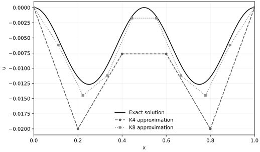

~/notes/problems
每日好题
$ solve ~/notes/problems --date today
分类 / 全部
2026-11-25
01. 三角函数幂乘积的降次积分
求不定积分 \[ \int\sin^2 3x\,\sin^3 2x\,dx. \]
answer/ 展开答案
由降次公式， \[ \sin^3 2x=\frac{3\sin2x-\sin6x}{4},\qquad \sin^2 3x=\frac{1-\cos6x}{2}. \] 所以 \[ \begin{aligned} \sin^2 3x\sin^3 2x &=\frac18\bigl[3\sin2x-\sin6x-3\sin2x\cos6x+\sin6x\cos6x\bigr]\\ &=\frac18\left[3\sin2x-\sin6x-\frac32\sin8x+\frac32\sin4x+\frac12\sin12x\right]. \end{aligned} \] 逐项积分，得 \[ \boxed{-\frac3{16}\cos2x+\frac1{48}\cos6x+\frac3{128}\cos8x-\frac3{64}\cos4x-\frac1{192}\cos12x+C}. \]
来源：吉米多维奇《数学分析习题集》第 1753 题
02. 正弦平方与余弦乘积的倒数积分
求不定积分 \[ \int\frac{dx}{\sin^2x\cos x}. \]
answer/ 展开答案
由 \(\sin^2x+\cos^2x=1\)， \[ \frac1{\sin^2x\cos x}=\frac1{\cos x}+\frac{\cos x}{\sin^2x}. \] 因此 \[ \begin{aligned} \int\frac{dx}{\sin^2x\cos x} &=\int\sec x\,dx+\int\frac{d(\sin x)}{\sin^2x}\\ &=\boxed{\ln|\sec x+\tan x|-\frac1{\sin x}+C}. \end{aligned} \] 结果在 \(\sin x\cos x\ne0\) 的各区间上成立。
来源：吉米多维奇《数学分析习题集》第 1755 题
03. 四次多项式分母的有理积分
求不定积分 \[ \int\frac{x\,dx}{x^4+3x^2+2}. \]
answer/ 展开答案
由 \(x^4+3x^2+2=(x^2+1)(x^2+2)\)，得 \[ \begin{aligned} \int\frac{x\,dx}{x^4+3x^2+2} &=\frac12\int\frac{d(x^2)}{(x^2+1)(x^2+2)}\\ &=\frac12\int\left(\frac1{x^2+1}-\frac1{x^2+2}\right)d(x^2)\\ &=\frac12\ln(x^2+1)-\frac12\ln(x^2+2)+C\\ &=\boxed{\frac12\ln\frac{x^2+1}{x^2+2}+C}. \end{aligned} \]
来源：吉米多维奇《数学分析习题集》第 1738 题
04. 两个一次因子平方乘积的倒数积分
求不定积分 \[ \int\frac{dx}{(x+a)^2(x+b)^2}\qquad(a,b\in\mathbb R,\ a\ne b). \]
answer/ 展开答案
利用 \[ \frac1{(x+a)(x+b)}=\frac1{b-a}\left(\frac1{x+a}-\frac1{x+b}\right), \] 将两边平方，得 \[ \frac1{(x+a)^2(x+b)^2} =\frac1{(b-a)^2}\left[\frac1{(x+a)^2}+\frac1{(x+b)^2}-\frac2{(x+a)(x+b)}\right]. \] 再次拆分交叉项后逐项积分，得 \[ \begin{aligned} \int\frac{dx}{(x+a)^2(x+b)^2} &=\frac1{(b-a)^2}\left[-\frac1{x+a}-\frac1{x+b}-\frac2{b-a}\bigl(\ln|x+a|-\ln|x+b|\bigr)\right]+C\\ &=\boxed{\frac1{(b-a)^2}\left[\frac2{b-a}\ln\left|\frac{x+b}{x+a}\right|-\frac1{x+a}-\frac1{x+b}\right]+C}. \end{aligned} \] 结果在 \(x\ne-a,-b\) 的各区间上成立。
来源：吉米多维奇《数学分析习题集》第 1739 题
2026-11-24
01. 逆矩阵的各行元素和
设 \(n\) 阶非奇异矩阵 \(A\) 的每一行元素之和均为 \(c\)。证明：\(c\ne0\)，且 \(A^{-1}\) 的每一行元素之和均为 \(c^{-1}\)。
answer/ 展开答案
令 \(e=(1,1,\ldots,1)^{\mathrm T}\)，则 \[ Ae=ce. \] 若 \(c=0\)，则 \(Ae=0\) 有非零解 \(e\)，与 \(A\) 非奇异矛盾，故 \(c\ne0\)。
左乘 \(A^{-1}\)，得 \(e=cA^{-1}e\)，即 \[ A^{-1}e=c^{-1}e. \] 左端各分量正是 \(A^{-1}\) 各行元素之和，故结论成立。
来源：《高等代数习题解》（杨子胥编）第 530 题
02. 乘积矩阵的伴随矩阵
设 \(A,B\) 为数域 \(P\) 上任意两个 \(n\) 阶矩阵，\(A^*\) 表示 \(A\) 的伴随矩阵。证明： \[ (AB)^*=B^*A^*. \]
answer/ 展开答案
由伴随矩阵的基本性质， \[ AA^*=A^*A=(\det A)E. \] 于是 \[ \begin{aligned} (\det A)(\det B)B^*A^* &=(AB)^*AB(B^*A^*)\\ &=(AB)^*A(BB^*)A^*\\ &=(\det B)(AB)^*AA^*\\ &=(\det A)(\det B)(AB)^*. \end{aligned} \] 当 \(\det A\det B\ne0\) 时，约去该非零标量，即得结论。
对一般的 \(A,B\)，令 \(A_t=A+tE\)、\(B_t=B+tE\)。\(\det(A+tE)\)、\(\det(B+tE)\) 都是关于 \(t\) 的首一多项式，因此除有限多个 \(t\in P\) 外，\(A_t,B_t\) 均可逆。由已证情形， \[ (A_tB_t)^*=B_t^*A_t^* \] 对无穷多个 \(t\) 成立。两边每个元素都是关于 \(t\) 的多项式，故恒等。令 \(t=0\)，得 \((AB)^*=B^*A^*\)。
来源：《高等代数习题解》（杨子胥编）第 538 题
03. 由线性无关向量构造齐次方程组
设 \(\alpha_1,\ldots,\alpha_s\) 为数域 \(P\) 上 \(s\) 个线性无关的 \(n\) 维列向量，其中 \(1\le s\le n\)。证明：存在一个含 \(n\) 个未知量的齐次线性方程组，以 \(\alpha_1,\ldots,\alpha_s\) 为基础解系。
answer/ 展开答案
将这些向量转置后作为行，组成矩阵 \[ A=\begin{pmatrix}\alpha_1^{\mathrm T}\\\vdots\\\alpha_s^{\mathrm T}\end{pmatrix}. \] 由线性无关性，\(r(A)=s\)。
先设 \(s<n\)。取齐次方程组 \(Ay=0\) 的一组基础解系 \(\beta_1,\ldots,\beta_{n-s}\)，并令 \[ B=\begin{pmatrix}\beta_1^{\mathrm T}\\\vdots\\\beta_{n-s}^{\mathrm T}\end{pmatrix}. \] 这些行线性无关，所以 \(r(B)=n-s\)，方程组 \(Bx=0\) 的基础解系含 \(s\) 个向量。
又由 \(A\beta_j=0\)，对所有 \(i,j\) 均有 \[ \alpha_i^{\mathrm T}\beta_j=0. \] 转置后得 \(\beta_j^{\mathrm T}\alpha_i=0\)，所以 \(B\alpha_i=0\)。因此 \(\alpha_1,\ldots,\alpha_s\) 是 \(Bx=0\) 的 \(s\) 个线性无关解，恰构成其基础解系。
若 \(s=n\)，取零矩阵 \(B=0_{n\times n}\)。此时任意 \(n\) 个线性无关的 \(n\) 维向量均构成 \(Bx=0\) 的基础解系。
来源：《高等代数习题解》（杨子胥编）第 438 题
discussion/ 2026-11-24 · 当日讨论
展开后加载讨论，使用 GitHub 账号分享思路、提问或勘误。
2026-11-23
01. 三角函数线性组合的积分
求不定积分 \[ \int\frac{\sin x}{a\cos x+b\sin x}\,dx\qquad(a,b\in\mathbb R,\ a^2+b^2\ne0). \]
answer/ 展开答案
令 \(u=a\cos x+b\sin x\)，则 \[ bu-au'=b(a\cos x+b\sin x)-a(-a\sin x+b\cos x)=(a^2+b^2)\sin x. \] 所以在分母不为零的区间上， \[ \begin{aligned} \int\frac{\sin x}{a\cos x+b\sin x}\,dx &=\frac1{a^2+b^2}\left(\int b\,dx-a\int\frac{du}{u}\right)\\ &=\boxed{\frac{bx-a\ln|a\cos x+b\sin x|}{a^2+b^2}+C}. \end{aligned} \]
来源：《微积分》（浙江大学卢兴江等主编）第五章 · 手稿第（4）题
02. 余割函数的不定积分
求不定积分 \[ \int\csc x\,dx. \]
answer/ 展开答案
由半角公式， \[ \begin{aligned} \int\csc x\,dx &=\int\frac{dx}{2\sin\frac x2\cos\frac x2}\\ &=\int\frac1{\tan\frac x2}\,d\left(\tan\frac x2\right)\\ &=\boxed{\ln\left|\tan\frac x2\right|+C} =\ln|\csc x-\cot x|+C. \end{aligned} \] 结果在 \(\sin x\ne0\) 的各区间上成立。
来源：《微积分》（浙江大学卢兴江等主编）第五章 · 手稿第（5）题（余割）
03. 正割函数的不定积分
求不定积分 \[ \int\sec x\,dx. \]
answer/ 展开答案
利用 \(\sec x=\csc(x+\frac\pi2)\)，得 \[ \begin{aligned} \int\sec x\,dx &=\int\csc\left(x+\frac\pi2\right)\,d\left(x+\frac\pi2\right)\\ &=\ln\left|\tan\left(\frac x2+\frac\pi4\right)\right|+C\\ &=\boxed{\ln|\sec x+\tan x|+C}. \end{aligned} \] 结果在 \(\cos x\ne0\) 的各区间上成立。
来源：《微积分》（浙江大学卢兴江等主编）第五章 · 手稿第（6）题
04. 平方差根式的不定积分
求不定积分 \[ \int\frac{dx}{\sqrt{x^2-a^2}}\qquad(a>0,\ |x|>a). \]
answer/ 展开答案
当 \(x>a\) 时，设 \(x=a\sec t\)，\(0<t<\frac\pi2\)，则 \[ \begin{aligned} \int\frac{dx}{\sqrt{x^2-a^2}} &=\int\frac{a\sec t\tan t}{a\tan t}\,dt =\int\sec t\,dt\\ &=\ln|\sec t+\tan t|+C_1\\ &=\ln\left|x+\sqrt{x^2-a^2}\right|+C_2. \end{aligned} \] 当 \(x<-a\) 时，令 \(t=-x>a\)，得 \[ \begin{aligned} \int\frac{dx}{\sqrt{x^2-a^2}} &=-\ln\left(t+\sqrt{t^2-a^2}\right)+C_3\\ &=\ln\left(t-\sqrt{t^2-a^2}\right)+C_4\\ &=\ln\left|x+\sqrt{x^2-a^2}\right|+C_4. \end{aligned} \] 其中用了 \((t+\sqrt{t^2-a^2})(t-\sqrt{t^2-a^2})=a^2\)。故在定义域的各区间上， \[ \boxed{\int\frac{dx}{\sqrt{x^2-a^2}}=\ln\left|x+\sqrt{x^2-a^2}\right|+C}. \]
来源：《微积分》（浙江大学卢兴江等主编）第五章 · 手稿第（5）题（平方差根式）
05. 含一加正弦的积分
求不定积分 \[ \int\frac{dx}{1+\sin x}. \]
answer/ 展开答案
在 \(\cos x\ne0\) 时， \[ \begin{aligned} \int\frac{dx}{1+\sin x} &=\int\frac{1-\sin x}{\cos^2x}\,dx\\ &=\int(\sec^2x-\tan x\sec x)\,dx\\ &=\tan x-\sec x+C. \end{aligned} \] 将结果写成 \[ \boxed{-\frac{\cos x}{1+\sin x}+C}, \] 即可覆盖原被积函数的完整定义区间 \(1+\sin x\ne0\)。事实上， \[ \left(-\frac{\cos x}{1+\sin x}\right)'=\frac{\sin x(1+\sin x)+\cos^2x}{(1+\sin x)^2}=\frac1{1+\sin x}. \]
来源：吉米多维奇《数学分析习题集》第 1670 题
06. 平方和的二分之三次根式积分
求不定积分 \[ \int\frac{dx}{(x^2+1)^{3/2}}. \]
answer/ 展开答案
令 \(x=\tan\theta\)，\(-\frac\pi2<\theta<\frac\pi2\)，则 \(\sec\theta>0\)，所以 \[ \begin{aligned} \int\frac{dx}{(x^2+1)^{3/2}} &=\int\frac{\sec^2\theta}{\sec^3\theta}\,d\theta\\ &=\int\cos\theta\,d\theta =\sin\theta+C\\ &=\boxed{\frac{x}{\sqrt{x^2+1}}+C}. \end{aligned} \]
来源：吉米多维奇《数学分析习题集》第 1684 题
07. 三角平方和根式的积分
求不定积分 \[ \int\frac{\sin x\cos x}{\sqrt{a^2\sin^2x+b^2\cos^2x}}\,dx\qquad(a,b\in\mathbb R,\ a^2+b^2>0). \]
answer/ 展开答案
若 \(a^2\ne b^2\)，由 \[ d(a^2\sin^2x+b^2\cos^2x)=2(a^2-b^2)\sin x\cos x\,dx, \] 得 \[ \begin{aligned} \int\frac{\sin x\cos x}{\sqrt{a^2\sin^2x+b^2\cos^2x}}\,dx &=\frac1{2(a^2-b^2)}\int\frac{d(a^2\sin^2x+b^2\cos^2x)}{\sqrt{a^2\sin^2x+b^2\cos^2x}}\\ &=\boxed{\frac{\sqrt{a^2\sin^2x+b^2\cos^2x}}{a^2-b^2}+C}. \end{aligned} \] 若 \(a^2=b^2\ne0\)，则分母为 \(|a|\)，所以 \[ \boxed{\int\frac{\sin x\cos x}{|a|}\,dx=\frac{\sin^2x}{2|a|}+C}. \] 结果均在根式分母不为零的各区间上成立。
来源：吉米多维奇《数学分析习题集》第 1700（a）题
discussion/ 2026-11-23 · 当日讨论
展开后加载讨论，使用 GitHub 账号分享思路、提问或勘误。
2026-11-22
01. 对称差分提取四阶导数
设 \(f\) 在 \(a\) 的某邻域内四阶连续可导，求 \[ \lim_{h\to0}\frac{f(a+2h)-4f(a+h)+6f(a)-4f(a-h)+f(a-2h)}{h^4}. \]
answer/ 展开答案
由四阶 Taylor 展开， \[ f(a+t)+f(a-t)=2f(a)+t^2f''(a)+\frac{t^4}{12}f^{(4)}(a)+o(t^4). \] 分别令 \(t=2h\)、\(t=h\)，得到 \[ \begin{aligned} f(a+2h)+f(a-2h)&=2f(a)+4h^2f''(a)+\frac43h^4f^{(4)}(a)+o(h^4),\\ 4f(a+h)+4f(a-h)&=8f(a)+4h^2f''(a)+\frac13h^4f^{(4)}(a)+o(h^4). \end{aligned} \] 两式相减再加 \(6f(a)\)，分子为 \(h^4f^{(4)}(a)+o(h^4)\)。故极限为 \[ \boxed{f^{(4)}(a)}. \]
来源：自编（接续对称差分与二阶导数问题）
02. 由对称幂等矩阵构造正交矩阵
设 \(P\) 为 \(n\) 阶实矩阵，满足 \(P^2=P\)、\(P^{\mathrm T}=P\)。记 \(r(P)=r\)，令 \(Q=E-2P\)，其中 \(E\) 为单位矩阵。
（1）证明 \(Q\) 为正交矩阵，且 \(Q^{-1}=Q\)。
（2）求 \(r(E-Q)\) 与 \(r(E+Q)\)。
answer/ 展开答案
（1）由 \(P^{\mathrm T}=P\)，有 \(Q^{\mathrm T}=Q\)。又 \[ Q^2=(E-2P)^2=E-4P+4P^2=E. \] 故 \(Q^{-1}=Q\)，且 \(Q^{\mathrm T}Q=Q^2=E\)，所以 \(Q\) 为正交矩阵。
（2）由 \(E-Q=2P\)，得 \[ \boxed{r(E-Q)=r}. \] 由 \(P(E-P)=0\) 及乘积的秩不等式， \[ r(P)+r(E-P)\le n. \] 又 \(E=P+(E-P)\)，所以 \[ n\le r(P)+r(E-P). \] 故 \(r(E-P)=n-r\)。由 \(E+Q=2(E-P)\)，得 \[ \boxed{r(E+Q)=n-r}. \]
来源：自编（结合近期幂等矩阵、中心化矩阵与正交矩阵问题）
discussion/ 2026-11-22 · 当日讨论
展开后加载讨论，使用 GitHub 账号分享思路、提问或勘误。
2026-11-21
01. 对称差分与二阶导数
设 \(f\) 在 \(a\) 的某邻域内二阶连续可导。
（1）求 \[ \lim_{h\to0}\frac{f(a+h)-2f(a)+f(a-h)}{h^2}. \] （2）证明：对每个充分小的 \(h>0\)，存在 \(\xi_h\in(a-h,a+h)\)，使 \[ f(a+h)-2f(a)+f(a-h)=h^2f''(\xi_h). \]
answer/ 展开答案
（1）在 \(a\) 处作二阶 Taylor 展开： \[ f(a\pm h)=f(a)\pm hf'(a)+\frac{h^2}{2}f''(a)+o(h^2). \] 相加并减去 \(2f(a)\)，得 \[ f(a+h)-2f(a)+f(a-h)=h^2f''(a)+o(h^2). \] 故极限为 \(\boxed{f''(a)}\)。
（2）记 \[ K=\frac{f(a+h)-2f(a)+f(a-h)}{h^2},\qquad L=\frac{f(a+h)-f(a-h)}{2h}, \] 令 \[ g(t)=f(t)-f(a)-L(t-a)-\frac K2(t-a)^2. \] 直接代入可得 \(g(a-h)=g(a)=g(a+h)=0\)。分别在 \([a-h,a]\)、\([a,a+h]\) 上应用罗尔定理，得 \(u\in(a-h,a)\)、\(v\in(a,a+h)\)，满足 \(g'(u)=g'(v)=0\)。
再对 \(g'\) 在 \([u,v]\) 上应用罗尔定理，存在 \(\xi_h\in(u,v)\)，使 \[ 0=g''(\xi_h)=f''(\xi_h)-K. \] 代入 \(K\) 的定义即得结论。
来源：自编（结合近期 Taylor 展开与中值定理问题）
02. 由正交矩阵构造反对称矩阵
设 \(Q\) 为 \(n\) 阶实正交矩阵，且 \(E+Q\) 可逆，其中 \(E\) 为单位矩阵。令 \[ A=(E-Q)(E+Q)^{-1}. \] （1）证明 \(A^{\mathrm T}=-A\)。
（2）证明 \(E+A\) 可逆，并用 \(A\) 表示 \(Q\)。
answer/ 展开答案
（1）由 \(Q^{\mathrm T}=Q^{-1}\)， \[ \begin{aligned} A^{\mathrm T} &=(E+Q^{\mathrm T})^{-1}(E-Q^{\mathrm T})\\ &=(E+Q^{-1})^{-1}(E-Q^{-1})\\ &=(E+Q)^{-1}Q\,Q^{-1}(Q-E)\\ &=-(E+Q)^{-1}(E-Q). \end{aligned} \] 又 \(E-Q\) 与 \(E+Q\) 可交换，因此也与 \((E+Q)^{-1}\) 可交换，故 \(A^{\mathrm T}=-A\)。
（2）由定义， \[ E+A=\bigl[(E+Q)+(E-Q)\bigr](E+Q)^{-1}=2(E+Q)^{-1}, \] 所以 \(E+A\) 可逆。同理， \[ E-A=2Q(E+Q)^{-1}. \] 因此 \[ \boxed{Q=(E-A)(E+A)^{-1}}. \]
来源：自编（接续实反对称矩阵构造正交矩阵问题）
discussion/ 2026-11-21 · 当日讨论
展开后加载讨论，使用 GitHub 账号分享思路、提问或勘误。
2026-11-20
01. 指数差与正弦的三阶抵消
求极限 \[ \lim_{x\to0}\frac{e^x-e^{-x}-2\sin x}{x^3}. \]
answer/ 展开答案
由 Taylor 公式， \[ \begin{aligned} e^x&=1+x+\frac{x^2}{2}+\frac{x^3}{6}+o(x^3),\\ e^{-x}&=1-x+\frac{x^2}{2}-\frac{x^3}{6}+o(x^3),\\ 2\sin x&=2x-\frac{x^3}{3}+o(x^3). \end{aligned} \] 所以 \[ e^x-e^{-x}-2\sin x =\frac{2}{3}x^3+o(x^3). \] 故所求极限为 \(\boxed{\frac23}\)。
来源：自编（结合近期 Taylor 展开与高阶抵消问题）
02. 实反对称矩阵构造正交矩阵
设 \(A\) 为 \(n\) 阶实矩阵，满足 \(A^{\mathrm T}=-A\)，\(E\) 为单位矩阵。
（1）证明 \(E+A\) 与 \(E-A\) 均可逆。
（2）令 \(Q=(E-A)(E+A)^{-1}\)，证明 \(Q\) 为正交矩阵。
answer/ 展开答案
（1）对任意实列向量 \(x\)，标量 \(x^{\mathrm T}Ax\) 满足 \[ x^{\mathrm T}Ax=(x^{\mathrm T}Ax)^{\mathrm T} =x^{\mathrm T}A^{\mathrm T}x=-x^{\mathrm T}Ax, \] 故 \(x^{\mathrm T}Ax=0\)。若 \((E+A)x=0\)，左乘 \(x^{\mathrm T}\)，得 \[ x^{\mathrm T}x+x^{\mathrm T}Ax=x^{\mathrm T}x=0. \] 所以 \(x=0\)，齐次方程组仅有零解，故 \(E+A\) 可逆。对 \(E-A\) 同理。
（2）由转置与逆矩阵的性质， \[ Q^{\mathrm T}=(E-A)^{-1}(E+A). \] 又 \((E+A)(E-A)=(E-A)(E+A)=E-A^2\)，故 \[ \begin{aligned} Q^{\mathrm T}Q &=(E-A)^{-1}(E+A)(E-A)(E+A)^{-1}\\ &=(E-A)^{-1}(E-A)(E+A)(E+A)^{-1}=E. \end{aligned} \] 因此 \(Q\) 为正交矩阵。
来源：自编（结合近期反对称矩阵、逆矩阵与正交矩阵问题）
discussion/ 2026-11-20 · 当日讨论
展开后加载讨论，使用 GitHub 账号分享思路、提问或勘误。
2026-11-19
01. 布尔筛选与广播
给定数组：
import numpy as np
A = np.array([[2, 5, 1], [6, 3, 9], [4, 7, 8]])不使用循环，选出第二列大于 \(4\) 的整行，再将选出各行减去各自的行均值。写出代码、结果及结果形状。该操作是否改变 A？
answer/ 展开答案
B = A[A[:, 1] > 4]
C = B - B.mean(axis=1, keepdims=True)B 为 [[2, 5, 1], [4, 7, 8]]，形状为 (2, 3)。行均值的形状为 (2, 1)，可以广播到各行，故 \[
C=\begin{pmatrix}-2/3&7/3&-5/3\\-7/3&2/3&5/3\end{pmatrix}.
\] 结果形状为 (2, 3)。布尔索引产生副本，减法也产生新数组，因此 A 不变。
来源：自编 · FIP W10 向量与矩阵复习
02. 余弦相似度矩阵
设 \(U\) 为 \(m\times d\) 实矩阵，每行都是长度为 \(1\) 的向量，令 \(S=UU^{\mathsf T}\)。
（1）证明 \(S\) 对称、对角元均为 \(1\)，且每个元素属于 \([-1,1]\)。
（2）证明对任意实列向量 \(z\)，\(z^{\mathsf T}Sz\ge0\)。当 \(m>d\) 时，\(S\) 是否可能可逆？
answer/ 展开答案
（1）\(S^{\mathsf T}=(UU^{\mathsf T})^{\mathsf T}=UU^{\mathsf T}=S\)。记第 \(i\) 行对应向量为 \(u_i\)，则 \[ S_{ij}=u_i\cdot u_j,\qquad S_{ii}=\|u_i\|^2=1. \] 由 Cauchy–Schwarz 不等式，\(|S_{ij}|\le\|u_i\|\|u_j\|=1\)。
（2） \[ z^{\mathsf T}Sz=(U^{\mathsf T}z)^{\mathsf T}(U^{\mathsf T}z)=\|U^{\mathsf T}z\|^2\ge0. \] 又 \(r(S)\le r(U)\le d\)，当 \(m>d\) 时，\(r(S)<m\)，因此 \(S\) 不可逆。
来源：自编 · FIP W10 向量与矩阵复习
discussion/ 2026-11-19 · 当日讨论
展开后加载讨论，使用 GitHub 账号分享思路、提问或勘误。
2026-11-18
01. 指数函数商的对数极限
求极限 \[ \lim_{x\to0}\frac{\displaystyle\ln\frac{e^x-1}{x}-\frac x2}{x^2}. \]
answer/ 展开答案
当 \(x\ne0\) 时，\((e^x-1)/x>0\)，对数有定义。由 Taylor 公式， \[ \frac{e^x-1}{x}=1+\frac x2+\frac{x^2}{6}+o(x^2). \] 令 \(u=\frac x2+\frac{x^2}{6}+o(x^2)\)，则 \(u^2=\frac{x^2}{4}+o(x^2)\)。因此 \[ \begin{aligned} \ln\frac{e^x-1}{x} &=u-\frac{u^2}{2}+o(u^2)\\ &=\frac x2+\left(\frac16-\frac18\right)x^2+o(x^2)\\ &=\frac x2+\frac{x^2}{24}+o(x^2). \end{aligned} \] 故所求极限为 \(\boxed{\frac1{24}}\)。
来源：自编（结合近期 Taylor 展开题）
02. 按行中心化的矩阵表示
设 \(n\ge2\)，\(E\) 为 \(n\) 阶单位矩阵，\(J\) 为 \(n\) 阶全 \(1\) 矩阵，令 \[ H=E-\frac1nJ. \] （1）证明 \(H^2=H\)，并求 \(r(H)\)。
（2）设 \(X=(x_{ij})\) 为 \(m\times n\) 实矩阵，证明 \(XH\) 的每个元素等于原元素减去所在行的均值，并求 \(XH=X\) 的充要条件。
answer/ 展开答案
（1）由 \(J^2=nJ\)，得 \[ H^2=E-\frac2nJ+\frac1{n^2}J^2=E-\frac1nJ=H. \] \(H\) 每行的元素之和为零，所以各列之和为零，\(r(H)\le n-1\)。又由 \(E=H+J/n\) 及 \(r(J)=1\)， \[ n=r(E)\le r(H)+r(J/n)=r(H)+1. \] 所以 \(\boxed{r(H)=n-1}\)。
（2）\(XJ\) 的第 \((i,j)\) 个元素为 \(\sum_{k=1}^n x_{ik}\)，故 \[ (XH)_{ij}=x_{ij}-\frac1n\sum_{k=1}^n x_{ik}. \] 这正是每行减去自己的均值。因此 \(XH=X\) 当且仅当 \(X\) 每行的元素之和均为零。
来源：自编（结合近期矩阵运算与 NumPy 按行中心化问题）
discussion/ 2026-11-18 · 当日讨论
展开后加载讨论，使用 GitHub 账号分享思路、提问或勘误。
2026-11-17
01. 基本切片与布尔索引
写出下面程序运行后 a、b、c 的值，并说明原因。
import numpy as np
a = np.array([1, 2, 3, 4])
b = a[1:3]
c = a[a % 2 == 0]
b[0] = 20
c[0] = -1answer/ 展开答案
结果为：
a: [ 1 20 3 4]
b: [20 3]
c: [-1 4]基本切片 a[1:3] 返回视图，b[0] 与 a[1] 共用数据，所以修改 b[0] 会改变 a。
布尔索引返回副本。创建 c 时得到 [2, 4]，此后修改 a 或 c 都不会影响另一方。
来源：《程序设计与算法基础》W10 向量与矩阵课程笔记（2026-11-17），据笔记改编
02. 按行中心化与广播
给定：
import numpy as np
A = np.array([[1., 2., 3.], [4., 5., 9.]])（1）执行 A - A.mean(axis=1) 会发生什么？
（2）不使用循环，令每行减去该行的均值，写出代码与结果。
answer/ 展开答案
（1）A.mean(axis=1) 为 [2., 6.]，形状是 (2,)。与 A 的 (2, 3) 从末尾维度对齐时，2 与 3 不兼容，因此抛出 ValueError。
（2）保留被聚合的轴：
centered = A - A.mean(axis=1, keepdims=True)均值形状为 (2, 1)，沿列广播，结果为：
[[-1. 0. 1.]
[-2. -1. 3.]]来源：《程序设计与算法基础》W10 向量与矩阵课程笔记（2026-11-17），据笔记改编
03. 批量仿射变换的矩阵写法
给定：
import numpy as np
X = np.array([[1, 2, 3], [0, 1, 0]])
W = np.array([[1, 0, -1], [2, 1, 0]])
b = np.array([1, -2])X 每行是一个样本，单个样本的列向量形式满足 \(y=Wx+b\)。不使用循环，求全部样本的输出矩阵 Y，并写出其形状和值。能否用 X * W + b 代替？
answer/ 展开答案
每个样本按行存放，应右乘 W.T：
Y = X @ W.T + bX、W.T 的形状分别为 (2, 3)、(3, 2)，乘积形状为 (2, 2)。b 的形状为 (2,)，向每一行广播，得到：
[[-1 2]
[ 1 -1]]X * W 是逐元素乘法，未对输入分量求和，而且本例所得 (2, 3) 数组与 (2,) 的 b 无法广播。因此 X * W + b 不能代替上述计算。
来源：《程序设计与算法基础》W10 向量与矩阵课程笔记（2026-11-17），据笔记改编
discussion/ 2026-11-17 · 当日讨论
展开后加载讨论，使用 GitHub 账号分享思路、提问或勘误。
2026-11-16
01. 指数函数商的 Taylor 展开
将 \[ F(x)=\frac{x}{e^x-1} \] 按 \(x\) 的非负整数次幂展开，写到 \(x^4\)，余项用 \(o(x^4)\) 表示。在 \(x=0\) 处补定义 \(F(0)=1\)。
answer/ 展开答案
令 \[ G(x)=\begin{cases}(e^x-1)/x,&x\ne0,\\1,&x=0.\end{cases} \] 它在零点附近光滑且非零，因此 \(F=1/G\) 也光滑，可以作有限阶 Taylor 展开。设 \[ F(x)=c_0+c_1x+c_2x^2+c_3x^3+c_4x^4+o(x^4). \] 由 \((e^x-1)F(x)=x\)，为了比较到决定 \(c_4\) 的 \(x^5\) 项，写出 \[ e^x-1=x+\frac{x^2}{2}+\frac{x^3}{6}+\frac{x^4}{24}+\frac{x^5}{120}+o(x^5). \] 因为 \(e^x-1=O(x)\)，乘积中的余项为 \(o(x^5)\)。逐次比较系数，得 \[ \begin{aligned} c_0&=1,\\ c_1+c_0/2&=0,\\ c_2+c_1/2+c_0/6&=0,\\ c_3+c_2/2+c_1/6+c_0/24&=0,\\ c_4+c_3/2+c_2/6+c_1/24+c_0/120&=0. \end{aligned} \] 所以 \(c_1=-1/2\)、\(c_2=1/12\)、\(c_3=0\)、\(c_4=-1/720\)，即 \[ \boxed{\frac{x}{e^x-1}=1-\frac x2+\frac{x^2}{12}-\frac{x^4}{720}+o(x^4).} \]
来源：吉米多维奇《数学分析习题集》第 1382 题（据用户笔记整理）
02. Taylor 余项中值点的极限
设 \(n\ge1\)，\(f\) 在固定点 \(x\) 的邻域内属于 \(C^{n+1}\)，且 \(f^{(n+1)}(x)\ne0\)。对每个充分小的非零 \(h\)，取某个 \(\theta(h)\in(0,1)\)，使 \[ f(x+h)=\sum_{k=0}^{n-1}\frac{f^{(k)}(x)}{k!}h^k+\frac{h^n}{n!}f^{(n)}(x+\theta(h)h). \] 证明： \[ \lim_{h\to0}\theta(h)=\frac1{n+1}. \]
answer/ 展开答案
在固定点 \(x\)，由 Peano 公式， \[ f(x+h)=\sum_{k=0}^{n}\frac{f^{(k)}(x)}{k!}h^k+\frac{f^{(n+1)}(x)}{(n+1)!}h^{n+1}+o(h^{n+1}). \] 与题给等式比较，消去低阶多项式，并除以 \(h^n/n!\)，得 \[ f^{(n)}(x+\theta h)-f^{(n)}(x)=\frac{h}{n+1}f^{(n+1)}(x)+o(h).\tag{1} \] 令 \(u=\theta(h)h\)。因为 \(0<\theta<1\)，有 \(u\to0\)，所以 \[ f^{(n)}(x+u)-f^{(n)}(x)=f^{(n+1)}(x)u+o(u). \] 若 \(o(u)=u\varepsilon(u)\)，其中 \(\varepsilon(u)\to0\)，则 \(o(u)/h=\theta\varepsilon(u)\to0\)，故 \[ f^{(n)}(x+\theta h)-f^{(n)}(x)=\theta h f^{(n+1)}(x)+o(h).\tag{2} \] 比较（1）、（2），除以非零的 \(hf^{(n+1)}(x)\)，得 \[ \theta(h)=\frac1{n+1}+o(1). \] 因此 \[ \boxed{\lim_{h\to0}\theta(h)=\frac1{n+1}.} \]
来源：吉米多维奇《数学分析习题集》第 1393 题（据用户笔记整理）
discussion/ 2026-11-16 · 当日讨论
展开后加载讨论，使用 GitHub 账号分享思路、提问或勘误。
2026-11-15
01. 置换矩阵的正交性
矩阵 \(A\) 由 \(n\) 阶单位矩阵 \(E\) 经过若干次行、列互换得到。求 \(A^{\mathsf T}A\)，并证明结论。
answer/ 展开答案
答案为 \(E\)。行、列互换保持每行、每列恰有一个 \(1\)、其余元素全为 \(0\) 的性质。设 \(A=(a_{ij})\)，则 \[ (A^{\mathsf T}A)_{ij}=\sum_{k=1}^n a_{ki}a_{kj}. \] 当 \(i=j\) 时，该和为 \(1\)；当 \(i\ne j\) 时，每行的两个元素不能同时为 \(1\)，该和为 \(0\)。故 \(A^{\mathsf T}A=E\)。
来源：2025–2026 学年秋冬《线性代数（甲）》期中考试 · 第 7 题
02. 非零矩阵解的存在性
设 \(A,B,C\) 为 \(n\) 阶方阵，满足 \(r(A)<r(C)\le n\)，且 \(BC=O\)。证明存在非零矩阵 \(X\)，使得 \(AX=BX\)。
answer/ 展开答案
由秩不等式， \[ 0=r(BC)\ge r(B)+r(C)-n, \] 所以 \(r(B)\le n-r(C)\)。因此 \[ r(A-B)\le r(A)+r(B)\le r(A)+n-r(C)<n. \] 齐次方程组 \((A-B)z=0\) 有非零列向量解 \(z\)。令 \[ X=(z,0,\ldots,0), \] 则 \(X\ne O\) 且 \((A-B)X=O\)，即 \(AX=BX\)。
来源：2025–2026 学年秋冬《线性代数（甲）》期中考试 · 第 9 题
discussion/ 2026-11-15 · 当日讨论
展开后加载讨论，使用 GitHub 账号分享思路、提问或勘误。
2026-11-14
01. 秩一更新的逆矩阵
设 \(A\) 为可逆实矩阵，\(u,v\) 为相应维数的列向量。证明 \(A+uv^{\mathsf T}\) 可逆当且仅当 \(1+v^{\mathsf T}A^{-1}u\ne0\)，并求其逆矩阵。
answer/ 展开答案
记 \(s=v^{\mathsf T}A^{-1}u\)。若 \(1+s\ne0\)，令 \[ X=A^{-1}-\frac{A^{-1}uv^{\mathsf T}A^{-1}}{1+s}. \] 直接相乘： \[ (A+uv^{\mathsf T})X =E+\left(1-\frac1{1+s}-\frac{s}{1+s}\right)uv^{\mathsf T}A^{-1}=E. \] 因此 \[ (A+uv^{\mathsf T})^{-1}=A^{-1}-\frac{A^{-1}uv^{\mathsf T}A^{-1}}{1+v^{\mathsf T}A^{-1}u}. \] 若 \(1+s=0\)，则 \(u\ne0\)，从而 \(A^{-1}u\ne0\)，而 \[ (A+uv^{\mathsf T})A^{-1}u=(1+s)u=0. \] 故矩阵不可逆。
来源：线性代数复习 · 特殊矩阵求逆与 Sherman–Morrison 公式
02. 对角矩阵加全一矩阵
求矩阵的逆： \[ M=\begin{pmatrix}2&1&1\\1&3&1\\1&1&4\end{pmatrix}. \]
answer/ 展开答案
写成 \(M=D+ee^{\mathsf T}\)，其中 \[ D=\operatorname{diag}(1,2,3),\qquad e=(1,1,1)^{\mathsf T}. \] 有 \[ D^{-1}=\operatorname{diag}(1,\tfrac12,\tfrac13),\qquad 1+e^{\mathsf T}D^{-1}e=\frac{17}{6}. \] 由秩一更新公式， \[ M^{-1}=D^{-1}-\frac6{17}(D^{-1}e)(D^{-1}e)^{\mathsf T} =\frac1{17}\begin{pmatrix}11&-3&-2\\-3&7&-1\\-2&-1&5\end{pmatrix}. \]
来源：线性代数复习 · 特殊矩阵求逆与 Sherman–Morrison 公式
discussion/ 2026-11-14 · 当日讨论
展开后加载讨论，使用 GitHub 账号分享思路、提问或勘误。
2026-11-13
01. 矩阵方程与行列式
设 \(A,B,C\) 为三阶实矩阵，\(B\) 可逆，\(C=\operatorname{diag}(1,2,-1)\)，且 \(2BA+CB=O\)。求 \(|A+3E|\)。
answer/ 展开答案
由题设， \[ B(2A+6E)=(6E-C)B. \] 取行列式并约去 \(|B|\ne0\)，得 \[ 8|A+3E|=|6E-C|=5\cdot4\cdot7=140. \] 故 \(|A+3E|=\dfrac{35}{2}\)。
来源：2020–2021 学年秋冬《线性代数（甲）》期中第 2 题（等价整理）
02. 秩一更新的行列式
设 \(A\) 为 \(n\) 阶可逆矩阵，\(\alpha,\beta\) 为两个 \(n\) 维列向量，证明： \[ |A+\alpha\beta^{\mathsf T}|=|A|+\beta^{\mathsf T}A^*\alpha. \]
answer/ 展开答案
令 \[ M=\begin{pmatrix}A&\alpha\\-\beta^{\mathsf T}&1\end{pmatrix}. \] 分别作分块消元，得 \[ M\begin{pmatrix}E&O\\\beta^{\mathsf T}&1\end{pmatrix} =\begin{pmatrix}A+\alpha\beta^{\mathsf T}&\alpha\\O&1\end{pmatrix}, \] 以及 \[ \begin{pmatrix}E&O\\\beta^{\mathsf T}A^{-1}&1\end{pmatrix}M =\begin{pmatrix}A&\alpha\\O&1+\beta^{\mathsf T}A^{-1}\alpha\end{pmatrix}. \] 两个消元矩阵的行列式均为 \(1\)，故 \[ |A+\alpha\beta^{\mathsf T}|=|M| =|A|(1+\beta^{\mathsf T}A^{-1}\alpha) =|A|+\beta^{\mathsf T}A^*\alpha. \]
来源：2019–2020 学年秋冬《线性代数（甲）》期中第 8 题
discussion/ 2026-11-13 · 当日讨论
展开后加载讨论，使用 GitHub 账号分享思路、提问或勘误。
2026-11-12
01. 矩阵秩与右因子分解
设 \(A,B\) 是两个 \(n\) 阶实方阵，证明：\(r(A)=r(AB)\) 当且仅当存在 \(n\) 阶实方阵 \(C\) 使得 \(A=ABC\)。
answer/ 展开答案
若 \(A=ABC\)，则 \[ r(A)=r(ABC)\le r(AB)\le r(A), \] 故 \(r(A)=r(AB)\)。
反之，\(AB\) 的每一列都是 \(A\) 的列向量的线性组合，故 \[ \operatorname{Col}(AB)\subseteq\operatorname{Col}(A). \] 由两者维数相同，得列空间相等。记 \(A=(a_1,\ldots,a_n)\)，对每个 \(j\)，存在列向量 \(c_j\) 使得 \(a_j=ABc_j\)。取 \(C=(c_1,\ldots,c_n)\)，即得 \(A=ABC\)。
来源：2020–2021 学年秋冬《线性代数（甲）》期中考试 · 第 7 题
discussion/ 2026-11-12 · 当日讨论
展开后加载讨论，使用 GitHub 账号分享思路、提问或勘误。
2026-11-11
01. 正交矩阵之和的行列式
设 \(A,B\) 为 \(n\) 阶实矩阵，满足 \(AA^{\mathrm T}=E\)、\(BB^{\mathrm T}=E\)，且 \(\det A+\det B=0\)。求 \(\det(A+B)\)。
answer/ 展开答案
由 \(AA^{\mathrm T}=E\)、\(BB^{\mathrm T}=E\)，知 \(A,B\) 可逆，且 \(A^{\mathrm T}A=B^{\mathrm T}B=E\)。于是 \[ A+B=AB^{\mathrm T}B+AA^{\mathrm T}B =A(B^{\mathrm T}+A^{\mathrm T})B=A(A+B)^{\mathrm T}B. \] 两边取行列式，得 \[ \det(A+B)=\det A\cdot\det(A+B)\cdot\det B. \] 又 \((\det A)^2=(\det B)^2=1\)，且 \(\det B=-\det A\)，所以 \(\det A\det B=-1\)。故 \[ 2\det(A+B)=0,\qquad\boxed{\det(A+B)=0}. \]
来源：《线性代数习题精选精解》第 1.22 题
02. 对称分块矩阵的秩
设 \(A,B\) 为数域 \(P\) 上的 \(n\) 阶矩阵， \[ M=\begin{pmatrix}A&B\\B&A\end{pmatrix}. \] 证明： \[ r(M)\ge r(A+B)+r(A-B). \]
answer/ 展开答案
先将第一块行加上第二块行，再将第二块列减去第一块列，最后将第二块行加上第一块行的 \(-\frac12\) 倍，得 \[ \begin{aligned} \begin{pmatrix}A&B\\B&A\end{pmatrix} &\longrightarrow\begin{pmatrix}A+B&A+B\\B&A\end{pmatrix}\\ &\longrightarrow\begin{pmatrix}A+B&0\\B&A-B\end{pmatrix}\\ &\longrightarrow\begin{pmatrix}A+B&0\\-\frac12(A-B)&A-B\end{pmatrix}. \end{aligned} \] 再将第一块列加上第二块列的 \(\frac12\) 倍，得 \[ \begin{pmatrix}A+B&0\\0&A-B\end{pmatrix}. \] 上述操作均为初等行、列变换，不改变秩。因此 \[ r(M)=r\begin{pmatrix}A+B&0\\0&A-B\end{pmatrix} =r(A+B)+r(A-B), \] 从而原不等式成立。
来源：2018–2019 学年秋冬《线性代数（甲）》期中考试 · 第 7 题
discussion/ 2026-11-11 · 当日讨论
展开后加载讨论，使用 GitHub 账号分享思路、提问或勘误。
2026-11-10
01. 构造指定秩的零乘积矩阵
设 \(A\) 为 \(m\times n\) 矩阵，\(r(A)=r\)。证明：存在 \(n\times n\) 矩阵 \(B\)，满足 \(r(B)=n-r\)，且 \(AB=0\)。
answer/ 展开答案
由矩阵的等价标准形，存在可逆矩阵 \(P,Q\)，使 \[ PAQ=J=\begin{pmatrix}E_r&0\\0&0\end{pmatrix}_{m\times n}. \] 令 \[ D=\operatorname{diag}(\underbrace{0,\ldots,0}_{r},\underbrace{1,\ldots,1}_{n-r}),\qquad B=QD. \] 因为 \(JD=0\)，所以 \[ AB=AQD=P^{-1}JD=0. \] 又 \(Q\) 可逆，故 \(r(B)=r(QD)=r(D)=n-r\)。此构造也适用于 \(r=0\) 或 \(r=n\)。
来源：2017–2018 学年秋冬《线性代数（甲）》期中考试 · 第 4 题（历年卷合集整理：macanine）
02. 可交换条件下的分块行列式
设 \(A,B,C,D\) 均为 \(n\) 阶实矩阵，且 \(AC=CA\)。证明： \[ \begin{vmatrix}A&D\\C&B\end{vmatrix}=\det(AB-CD). \]
answer/ 展开答案
先设 \(A\) 可逆。由 \(AC=CA\)， \[ \begin{pmatrix}E&0\\-C&A\end{pmatrix} \begin{pmatrix}A&D\\C&B\end{pmatrix} =\begin{pmatrix}A&D\\0&AB-CD\end{pmatrix}. \] 两边取行列式，得 \[ \det A\cdot\begin{vmatrix}A&D\\C&B\end{vmatrix} =\det A\cdot\det(AB-CD). \] 约去非零的 \(\det A\)，即得结论。
对一般的 \(A\)，令 \(A_t=A+tE\)，仍有 \(A_tC=CA_t\)。因为 \(\det(A+tE)\) 是关于 \(t\) 的 \(n\) 次首一多项式，除有限多个实数 \(t\) 外，\(A_t\) 都可逆。由已证情形， \[ \begin{vmatrix}A+tE&D\\C&B\end{vmatrix} =\det\bigl((A+tE)B-CD\bigr) \] 对无穷多个实数 \(t\) 成立。两边都是关于 \(t\) 的多项式，故恒等。令 \(t=0\)，即得所证。
来源：2017–2018 学年秋冬《线性代数（甲）》期中考试 · 第 7 题（历年卷合集整理：macanine）
discussion/ 2026-11-10 · 当日讨论
展开后加载讨论，使用 GitHub 账号分享思路、提问或勘误。
2026-11-09
01. 互为逆矩阵条件下的平方和
设 \(A,B,C\) 均为 \(n\) 阶方阵，且 \(AB=BC=CA=E\)，其中 \(E\) 为单位矩阵，则 \(A^2+B^2+C^2=\)（ ）。
（A）\(3E\) （B）\(2E\) （C）\(E\) （D）\(0\)
answer/ 展开答案
由矩阵乘法的结合律， \[ \begin{aligned} A^2&=A(BC)A=(AB)(CA)=E,\\ B^2&=B(CA)B=(BC)(AB)=E,\\ C^2&=C(AB)C=(CA)(BC)=E. \end{aligned} \] 所以 \(A^2+B^2+C^2=3E\)，选（A）。
来源：《线性代数习题精选精解》第 1.4 题
02. 矩阵运算恒等式的辨析
已知 \(A,B\) 均为 \(n\) 阶方阵，\(E\) 为单位矩阵，则下列结论中必然成立的是（ ）。
（A）\((A+B)^2=A^2+2AB+B^2\)。
（B）\((AB)^{\mathrm T}=A^{\mathrm T}B^{\mathrm T}\)。
（C）\(AB=0\) 时，\(A=0\) 或 \(B=0\)。
（D）\(\det(A+AB)=0\iff\det A=0\) 或 \(\det(E+B)=0\)。
answer/ 展开答案
选（D）。因为 \[ \det(A+AB)=\det\bigl(A(E+B)\bigr)=\det A\cdot\det(E+B), \] 乘积为零当且仅当至少一个因子为零。
（A）的正确展开式为 \((A+B)^2=A^2+AB+BA+B^2\)；（B）的正确公式为 \((AB)^{\mathrm T}=B^{\mathrm T}A^{\mathrm T}\)。例如取 \[ A=\begin{pmatrix}1&0\\0&0\end{pmatrix},\qquad B=\begin{pmatrix}0&1\\0&0\end{pmatrix}, \] 则 \(AB=B\)、\(BA=0\)，可同时否定（A）、（B）。
对（C），取 \[ A=\begin{pmatrix}1&0\\0&0\end{pmatrix},\qquad B=\begin{pmatrix}0&0\\0&1\end{pmatrix}, \] 则 \(A,B\) 均非零，但 \(AB=0\)。
来源：《线性代数习题精选精解》第 1.5 题
03. 相似矩阵的高次幂
设 \[ A=\begin{pmatrix}0&-1&0\\1&0&0\\0&0&-1\end{pmatrix},\qquad B=P^{-1}AP, \] 其中 \(P\) 为三阶可逆矩阵，求 \(B^{2004}-2A^2\)。
answer/ 展开答案
直接计算得 \[ A^2=\begin{pmatrix}-1&0&0\\0&-1&0\\0&0&1\end{pmatrix},\qquad A^4=E. \] 所以 \(A^{2004}=(A^4)^{501}=E\)。由相似关系， \[ B^{2004}=P^{-1}A^{2004}P=E. \] 因此 \[ \boxed{B^{2004}-2A^2=\begin{pmatrix}3&0&0\\0&3&0\\0&0&-1\end{pmatrix}.} \]
来源：《线性代数习题精选精解》第 1.13 题
discussion/ 2026-11-09 · 当日讨论
展开后加载讨论，使用 GitHub 账号分享思路、提问或勘误。
2026-11-08
01. 矩阵等价与秩
设 \(A,B\) 为 \(m\times n\) 矩阵，证明：\(A,B\) 等价的充要条件是 \(r(A)=r(B)\)。
answer/ 展开答案
必要性：若 \(A,B\) 等价，则存在可逆矩阵 \(P,Q\)，使 \(PAQ=B\)。所以 \[ r(A)=r(PAQ)=r(B). \] 充分性：设 \(r(A)=r(B)=r\)。由矩阵的等价标准形，存在可逆矩阵 \(P_1,Q_1,P_2,Q_2\)，使 \[ P_1AQ_1=P_2BQ_2= \begin{pmatrix} E_r&0\\ 0&0 \end{pmatrix}_{m\times n}. \] 从而 \[ B=(P_2^{-1}P_1)A(Q_1Q_2^{-1}). \] 左右两侧的乘子均可逆，故 \(A,B\) 等价。
来源：《线性代数习题精选精解》第 4.19 题
02. 两个幂等矩阵的秩相等
设 \(n\) 阶方阵 \(A,B\) 满足 \(A^2=A\)、\(B^2=B\)，且 \(E-A-B\) 可逆，其中 \(E\) 为 \(n\) 阶单位矩阵。证明： \[ r(A)=r(B). \]
answer/ 展开答案
证法一：由 \(E-A-B\) 可逆， \[ n=r(E-A-B)\le r(E-A)+r(B), \] 所以 \(r(B)\ge n-r(E-A)\)。又由 \(A^2=A\)，得 \(A(E-A)=0\)，于是 \[ r(A)+r(E-A)\le n. \] 从而 \[ r(B)\ge n-r(E-A)\ge r(A). \] 交换 \(A,B\)，同理得 \(r(A)\ge r(B)\)，故 \(r(A)=r(B)\)。
证法二：由 \[ A(E-A-B)=A-A^2-AB=-AB, \] 且 \(E-A-B\) 可逆，得 \(r(A)=r(AB)\)。又 \[ (E-A-B)B=B-AB-B^2=-AB, \] 故 \(r(B)=r(AB)\)。因此 \(r(A)=r(B)\)。
来源：《线性代数习题精选精解》第 4.20 题
discussion/ 2026-11-08 · 当日讨论
展开后加载讨论，使用 GitHub 账号分享思路、提问或勘误。
2026-11-07
01. 加权幂和方程的根与极限
设 \(n\) 为正整数， \[ r_n(x)=x+2x^2+\cdots+nx^n. \] （1）证明：存在唯一的 \(x_n\in(0,1)\)，使得 \(r_n(x_n)=\frac12\)。
（2）求 \(\displaystyle\lim_{n\to\infty}x_n\)。
answer/ 展开答案
（1）\(r_n\) 在 \([0,1]\) 上连续，且 \[ r_n(0)=0<\frac12<r_n(1)=\frac{n(n+1)}2. \] 由介值定理，根 \(x_n\in(0,1)\) 存在。又 \[ r_n'(x)=1+2^2x+\cdots+n^2x^{n-1}>0\qquad(0<x<1), \] 故根唯一。
（2）由 \(r_{n+1}(x_n)=\frac12+(n+1)x_n^{n+1}>\frac12\)，得 \(x_{n+1}<x_n\)。又 \(x_1=\frac12\)，所以 \(0<x_n\le\frac12\)，数列收敛，记极限为 \(L\in[0,\frac12]\)。
将有限等比和求导，得 \[ r_n(x)=\frac{x-(n+1)x^{n+1}+nx^{n+2}}{(1-x)^2}. \] 代入 \(x=x_n\)。因 \(0<x_n\le\frac12\)，含 \(nx_n^{n+1}\) 的项趋于零，令 \(n\to\infty\)，得 \[ \frac{L}{(1-L)^2}=\frac12,\qquad L^2-4L+1=0. \] 由 \(L\in[0,\frac12]\)，得 \(\boxed{L=2-\sqrt3}\)。
来源：2026–2027 学年微积分（甲）Ⅰ期中考试（2026-11-07，用户提供题目手记）
02. 达布定理：导数的介值性
证明达布定理：设 \(f\) 在区间 \(I\) 上可导，\(a,b\in I\)，\(a<b\)。若 \(\lambda\) 严格介于 \(f'(a)\) 与 \(f'(b)\) 之间，则存在 \(\xi\in(a,b)\)，使得 \[ f'(\xi)=\lambda. \]
answer/ 展开答案
先设 \(f'(a)<\lambda<f'(b)\)，令 \(g(x)=f(x)-\lambda x\)。则 \(g\) 在 \([a,b]\) 上连续，且 \[ g'(a)<0,\qquad g'(b)>0. \] 由导数定义，对充分小的 \(h>0\)，有 \[ g(a+h)<g(a),\qquad g(b-h)<g(b). \] 所以 \(a,b\) 均不是 \(g\) 在 \([a,b]\) 上的最小值点。由最值定理，\(g\) 在某个 \(\xi\in(a,b)\) 处取得最小值。由费马定理， \[ g'(\xi)=0,\qquad f'(\xi)=\lambda. \] 若 \(f'(a)>\lambda>f'(b)\)，对 \(-f\) 与 \(-\lambda\) 应用上述结论即可。
来源：达布定理（用户指定）
discussion/ 2026-11-07 · 当日讨论
展开后加载讨论，使用 GitHub 账号分享思路、提问或勘误。
2026-11-06
01. 根式差的二阶极限
求极限 \[ \lim_{x\to0}\frac{\sqrt{1+2x+3x^2}-1-x}{x^2}. \]
answer/ 展开答案
分子有理化，得 \[ \frac{\sqrt{1+2x+3x^2}-1-x}{x^2} =\frac{2}{\sqrt{1+2x+3x^2}+1+x}\longrightarrow\boxed{1}. \]
来源：错题自编
02. 二项式幂的严格估计
证明： \[ 2<\left(1+\frac1{100}\right)^{100}<3. \]
answer/ 展开答案
由二项式定理， \[ \left(1+\frac1{100}\right)^{100} =2+\sum_{k=2}^{100}\binom{100}{k}\frac1{100^k}>2. \] 对 \(2\le k\le100\)，有 \[ \binom{100}{k}\frac1{100^k} =\frac1{k!}\prod_{j=0}^{k-1}\left(1-\frac j{100}\right)<\frac1{k!}\le\frac1{2^{k-1}}. \] 故 \[ \left(1+\frac1{100}\right)^{100} <2+\sum_{k=2}^{100}\frac1{2^{k-1}}<3. \]
来源：错题自编
03. 参数方程中对 y 的二阶导数
设 \(x=t^2+t\)，\(y=t^3+t\)，求 \[ \left.\frac{d^2x}{dy^2}\right|_{t=0}. \]
answer/ 展开答案
因 \(dy/dt=3t^2+1>0\)， \[ \frac{dx}{dy}=\frac{2t+1}{3t^2+1},\qquad \frac{d^2x}{dy^2}=\frac1{3t^2+1}\frac d{dt}\left(\frac{2t+1}{3t^2+1}\right) =\frac{2(3t^2+1)-6t(2t+1)}{(3t^2+1)^3}. \] 代入 \(t=0\)，得 \(\boxed{2}\)。
来源：错题自编
04. 幂函数与对数乘积的 n 阶导数
设 \(n\) 为正整数，\(x>0\)，求 \[ \frac{d^n}{dx^n}(x^n\ln x). \]
answer/ 展开答案
记 \(H_n=\sum_{k=1}^n1/k\)。由莱布尼兹公式及 \[ (\ln x)^{(k)}=(-1)^{k-1}(k-1)!x^{-k}\qquad(k\ge1), \] 得 \[ \frac{d^n}{dx^n}(x^n\ln x) =n!\left[\ln x+\sum_{k=1}^n(-1)^{k-1}\binom nk\frac1k\right]. \] 其中 \[ \sum_{k=1}^n(-1)^{k-1}\binom nk\frac1k =\int_0^1\frac{1-(1-t)^n}{t}\,dt =\int_0^1\sum_{j=0}^{n-1}(1-t)^j\,dt=H_n. \] 因此结果为 \(\boxed{n!(\ln x+H_n)}\)。
来源：错题自编
05. 对数递推数列的收敛性
设 \(a_1=1\)，\(a_{n+1}=\ln(1+a_n)\)。证明数列 \(\{a_n\}\) 收敛，并求其极限。
answer/ 展开答案
对任意 \(u>0\)，有 \(0<\ln(1+u)<u\)。由归纳法， \[ 0<a_{n+1}<a_n\le1. \] 故数列单调递减且有下界，存在极限 \(L\ge0\)。由连续性，\(L=\ln(1+L)\)。若 \(L>0\)，则 \(\ln(1+L)<L\)，矛盾。因此 \(\boxed{L=0}\)。
来源：错题自编
06. 收敛数列的算术平均
设 \(a_n\to A\)，证明 \[ \frac1n\sum_{k=1}^n a_k\longrightarrow A. \]
answer/ 展开答案
任给 \(\varepsilon>0\)，取 \(N\)，使 \(k>N\) 时 \(|a_k-A|<\varepsilon/2\)。令 \[ C=\sum_{k=1}^N|a_k-A|. \] 当 \(n>N\) 且 \(n>2C/\varepsilon\) 时， \[ \left|\frac1n\sum_{k=1}^n a_k-A\right| \le\frac Cn+\frac1n\sum_{k=N+1}^n|a_k-A| <\frac\varepsilon2+\frac\varepsilon2=\varepsilon. \] 故结论成立。
来源：错题自编
discussion/ 2026-11-06 · 当日讨论
展开后加载讨论，使用 GitHub 账号分享思路、提问或勘误。
2026-11-05
01. 函数的返回值
下面的 print 会看到什么？
def f(n):
n = n + 1
print(f(2))- A. 3
- B. 2
- C.
None - D. 语法错误
answer/ 展开答案
答案：C。
函数没有执行 return 语句时，返回值为 None。n = n + 1 只修改函数内的局部变量，因此 print(f(2)) 输出：
None来源：FIP 期中考试 · 第 7 题
discussion/ 2026-11-05 · 当日讨论
展开后加载讨论，使用 GitHub 账号分享思路、提问或勘误。
2026-11-04
01. 三角多项式的系数和估计
设 \(a_1,a_2,\ldots,a_n\) 为常数，记
\[ f(x)=\sum_{k=1}^n a_k\sin kx,\qquad g(x)=\sum_{j=1}^n a_{n-j+1}\sin jx. \]
已知 \(|f(x)|\le|\sin x|\)，\(|g(x)|\le|\sin x|\)，求证
\[ \left|\sum_{k=1}^n a_k\right|\le\frac{2}{n+1}. \]
提示：考虑 \(f'(0),g'(0)\)。
answer/ 展开答案
由 \(f(0)=g(0)=0\) 及题设不等式，得 \(|f'(0)|\le1\)，\(|g'(0)|\le1\)。又
\[ f'(0)=\sum_{k=1}^n ka_k,\qquad g'(0)=\sum_{k=1}^n(n-k+1)a_k. \]
故
\[ \left|\sum_{k=1}^n a_k\right| =\frac{|f'(0)+g'(0)|}{n+1} \le\frac{2}{n+1}. \]
来源：2026–2027 学年微积分（甲）Ⅰ期中模拟卷 · 第 10 题 B
discussion/ 2026-11-04 · 当日讨论
展开后加载讨论，使用 GitHub 账号分享思路、提问或勘误。
2026-11-03
01. 别名、浅拷贝与返回值
写出程序的完整输出：
a = [[1], [2]]
b = a[:]
b[0].append(3)
b[1] = [9]
print(a)
print(b)
print(a.reverse())
print(a)answer/ 展开答案
[[1, 3], [2]]
[[1, 3], [9]]
None
[[2], [1, 3]]切片创建外层新列表，内层列表仍共享。reverse()原地修改并返回None。
来源：FIP W1–W8 期中复习笔记 · 程序输出
02. 字典方法与插入顺序
写出程序的完整输出：
d = {}
for x in ['b','a','b']:
d[x] = d.get(x,0) + 1
print(d.get('c',0), 'c' in d)
print(d.setdefault('c',4))
print(list(d.items()))answer/ 展开答案
0 False
4
[('b', 2), ('a', 1), ('c', 4)]get不插入键；setdefault在缺键时插入。字典保留键首次插入的顺序。
来源：FIP W1–W8 期中复习笔记 · 程序输出
03. 递归的递进与回归
写出程序的完整输出，注意空格：
def walk(n):
if n == 0:
return
print(n, end=' ')
walk(n-1)
print(n, end=' ')
walk(3)
print()answer/ 展开答案
3 2 1 1 2 3 递归前依次输出3 2 1，返回时依次输出1 2 3。最后一个3后仍有一个空格，然后换行。
来源：FIP W1–W8 期中复习笔记 · 程序输出
discussion/ 2026-11-03 · 当日讨论
展开后加载讨论，使用 GitHub 账号分享思路、提问或勘误。
2026-11-02
01. 反正弦函数在原点的高阶导数
利用莱布尼兹公式，求函数 \(y=\arcsin x\) 的 \(y^{(n)}(0)\)，其中 \(n\ge1\)。
answer/ 展开答案
由 \((1-x^2)y''-xy'=0\)，求 \(r\) 阶导数并令 \(x=0\)，由莱布尼兹公式得 \[ y^{(r+2)}(0)=r^2y^{(r)}(0)\qquad(r\ge0). \] 结合 \(y(0)=0,y'(0)=1\)，得 \[ \boxed{y^{(2m)}(0)=0\ (m\ge1),\qquad y^{(2m+1)}(0)=[(2m-1)!!]^2\ (m\ge0).} \] 约定 \((-1)!!=1\)。
来源：微积分习题课
02. 反正切函数在原点的高阶导数
利用莱布尼兹公式，求函数 \(y=\arctan x\) 的 \(y^{(n)}(0)\)，其中 \(n\ge1\)。
answer/ 展开答案
由 \((1+x^2)y'=1\)，求 \(r\) 阶导数并令 \(x=0\)，得 \[ y^{(r+1)}(0)=-r(r-1)y^{(r-1)}(0)\qquad(r\ge2). \] 又 \(y'(0)=1,y''(0)=0\)，故 \[ \boxed{y^{(2m)}(0)=0\ (m\ge1),\qquad y^{(2m+1)}(0)=(-1)^m(2m)!\ (m\ge0).} \]
来源：微积分习题课
03. 根式函数在原点的高阶导数
利用莱布尼兹公式，求函数 \(y=\sqrt{1-x^2}\) 的 \(y^{(n)}(0)\)，其中 \(n\ge1\)。
answer/ 展开答案
由 \((1-x^2)y'+xy=0\)，求 \(r\) 阶导数并令 \(x=0\)，得 \[ y^{(r+1)}(0)=r(r-2)y^{(r-1)}(0)\qquad(r\ge1). \] 又 \(y(0)=1,y'(0)=0\)，故 \[ \boxed{y^{(2m+1)}(0)=0\ (m\ge0),\qquad y^{(2m)}(0)=-(2m-1)!!(2m-3)!!\ (m\ge1).} \] 约定 \((-1)!!=1\)。
来源：微积分习题课
04. 对数函数在原点的高阶导数
利用莱布尼兹公式，求函数 \(y=\ln(1+x^2)\) 的 \(y^{(n)}(0)\)，其中 \(n\ge1\)。
answer/ 展开答案
由 \((1+x^2)y'=2x\)，求 \(r\) 阶导数并令 \(x=0\)，当 \(r\ge2\) 时有 \[ y^{(r+1)}(0)=-r(r-1)y^{(r-1)}(0). \] 又 \(y'(0)=0,y''(0)=2\)，故 \[ \boxed{y^{(2m+1)}(0)=0\ (m\ge0),\qquad y^{(2m)}(0)=2(-1)^{m-1}(2m-1)!\ (m\ge1).} \]
来源：微积分习题课
05. 振荡函数的高阶可导性
设 \(n\) 为正整数，证明函数 \[ f(x)=\begin{cases}x^{2n}\sin\frac1x,&x\ne0,\\0,&x=0\end{cases} \] 在 \(x=0\) 处有一直到 \(n\) 阶的导数，但不存在 \(n+1\) 阶导数。
answer/ 展开答案
对 \(x\ne0\) 反复求导，\(f^{(k)}(x)\) 是若干项 \(x^p\sin(1/x)\) 或 \(x^p\cos(1/x)\) 的线性组合，其中最低幂次为 \(2n-2k\)。因而对 \(0\le k\le n-1\)， \[ f^{(k)}(x)=O(x^{2n-2k}). \] 从 \(f(0)=0\) 出发，逐次用导数定义，因 \(2n-2k-1\ge1\)，得 \(f^{(k+1)}(0)=0\)，所以 \(f^{(n)}(0)=0\)。
第 \(n\) 次求导的最低次项来自每次都对三角因子求导，故 \[ f^{(n)}(x)=(-1)^n\sin\left(\frac1x+\frac{n\pi}{2}\right)+O(x). \] 它在零点不连续，而 \(f^{(n)}(0)=0\)；因此 \(f^{(n)}\) 在零点不可导，即 \(f^{(n+1)}(0)\) 不存在。
来源：吉米多维奇《数学分析习题集》第 1224 题（用户提供照片，第 87 页）
06. 勒让德多项式的微分方程
证明：勒让德多项式 \[ P_m(x)=\frac{1}{2^m m!}\frac{d^m}{dx^m}(x^2-1)^m\qquad(m=0,1,2,\ldots) \] 满足方程 \[ (1-x^2)P_m''(x)-2xP_m'(x)+m(m+1)P_m(x)=0. \]
answer/ 展开答案
令 \(u=(x^2-1)^m\)，则 \[ (x^2-1)u'=2mxu. \] 两边求 \(m+1\) 阶导数，利用莱布尼兹公式得 \[ (x^2-1)u^{(m+2)}+2(m+1)xu^{(m+1)}+m(m+1)u^{(m)} =2m\bigl[xu^{(m+1)}+(m+1)u^{(m)}\bigr]. \] 移项，得 \[ (x^2-1)u^{(m+2)}+2xu^{(m+1)}-m(m+1)u^{(m)}=0. \] 代入 \(u^{(m)}=2^m m!P_m\)，即得所证。
来源：吉米多维奇《数学分析习题集》第 1227 题（用户提供照片，第 87 页）
discussion/ 2026-11-02 · 当日讨论
展开后加载讨论，使用 GitHub 账号分享思路、提问或勘误。
2026-11-01
01. 压缩映射与不动点
设函数 \(f(x)\) 满足对于任意 \(x\in[a,b]\)，都有 \(f(x)\in[a,b]\)。且存在常数 \(k\in(0,1)\)，对于任意 \(x_1,x_2\in[a,b]\)，都有 \(|f(x_2)-f(x_1)|\le k|x_2-x_1|\)。证明：
（1）存在唯一 \(\xi\in[a,b]\) 使得 \(f(\xi)=\xi\)。
（2）对于任意 \(x_0\in[a,b]\)，定义 \(x_{n+1}=f(x_n)\ (n\in\mathbb N)\)。证明 \(\{x_n\}\) 收敛且 \(\displaystyle\lim_{n\to\infty}x_n=\xi\)。
answer/ 展开答案
（1）由 Lipschitz 条件可知 \(f\) 连续。令 \(F(x)=f(x)-x\)，则 \(F(a)\ge0,F(b)\le0\)。由介值定理（含端点为零的情形），存在 \(\xi\in[a,b]\) 使得 \(f(\xi)=\xi\)。
若另有 \(f(\eta)=\eta\)，则 \[ |\xi-\eta|=|f(\xi)-f(\eta)|\le k|\xi-\eta|. \] 由 \(k<1\)，得 \(\xi=\eta\)，故不动点唯一。
（2）由 \(f([a,b])\subset[a,b]\)，迭代始终有定义，且 \[ |x_n-\xi|\le k|x_{n-1}-\xi|\le\cdots\le k^n|x_0-\xi|\longrightarrow0. \] 故 \(x_n\to\xi\)。
来源：2026–2027 学年微积分（甲）Ⅰ期中模拟卷 · 杨立命题 · 第 12 题
02. 奇函数与中值定理
设奇函数 \(f(x)\) 在 \([-1,1]\) 上二阶可导，证明：存在 \(\xi\in(-1,1)\) 使得 \(f''(\xi)-f'(\xi)+f(1)=0\)。
answer/ 展开答案
由奇性，\(f(0)=0,f(-1)=-f(1)\)。分别在 \([0,1]\) 与 \([-1,0]\) 上用拉格朗日中值定理，得 \(\theta_1\in(0,1)\)、\(\theta_2\in(-1,0)\)，满足 \[ f'(\theta_1)=f'(\theta_2)=f(1). \] 令 \(F(x)=e^{-x}[f'(x)-f(1)]\)，则 \(F(\theta_1)=F(\theta_2)=0\)。由罗尔定理，存在 \(\xi\in(\theta_2,\theta_1)\)，使得 \[ 0=F'(\xi)=e^{-\xi}[f''(\xi)-f'(\xi)+f(1)]. \] 因此结论成立。
来源：2026–2027 学年微积分（甲）Ⅰ期中模拟卷 · 杨立命题 · 附加题
discussion/ 2026-11-01 · 当日讨论
展开后加载讨论，使用 GitHub 账号分享思路、提问或勘误。
2026-10-31
01. 余弦行列式
计算 \(n\) 阶行列式 \[ D_n=\begin{vmatrix} 1&1&\cdots&1\\ \cos\theta_1&\cos\theta_2&\cdots&\cos\theta_n\\ \cos2\theta_1&\cos2\theta_2&\cdots&\cos2\theta_n\\ \vdots&\vdots&&\vdots\\ \cos((n-1)\theta_1)&\cos((n-1)\theta_2)&\cdots&\cos((n-1)\theta_n) \end{vmatrix},\qquad \theta_1,\ldots,\theta_n\in\mathbb R. \]
answer/ 展开答案
令 \(x_j=\cos\theta_j\)。由 \[ \cos((k+1)\theta)=2\cos\theta\cos(k\theta)-\cos((k-1)\theta) \] 可知 \(\cos(k\theta)=T_k(\cos\theta)\)，其中 \(T_0(x)=1\)，\(T_1(x)=x\)；对 \(k\ge1\)，\(T_k\) 是首项系数为 \(2^{k-1}\) 的 \(k\) 次多项式。
从最后一行起，依次用前面各行消去各行多项式的低次项，再提出首项系数，得 \[ D_n=\left(\prod_{k=1}^{n-1}2^{k-1}\right) \begin{vmatrix} 1&\cdots&1\\ x_1&\cdots&x_n\\ \vdots&&\vdots\\ x_1^{n-1}&\cdots&x_n^{n-1} \end{vmatrix} =\boxed{2^{(n-1)(n-2)/2}\prod_{1\le i<j\le n}(\cos\theta_j-\cos\theta_i)}. \] 当 \(n=1\) 时，空积取 \(1\)，结论仍成立。
来源：云峰线性代数专题课
02. 导数零点与辅助函数
设 \(f(x)\) 在 \([0,2]\) 上连续，在 \((0,2)\) 内可导，且 \(f(0)=0\)，\(f(1)=3\)，\(f(2)=-1\)。证明：
- 存在 \(\xi\in(0,2)\)，使得 \(f'(\xi)=0\)；
- 存在 \(\eta\in(0,2)\)，使得 \(f(\eta)+f'(\eta)=0\)。
answer/ 展开答案
由 \(f(1)=3>0\)、\(f(2)=-1<0\) 及介值定理，存在 \(c\in(1,2)\)，使得 \(f(c)=0\)。
（1）在 \([0,c]\) 上，\(f\) 连续、在内部可导，且 \(f(0)=f(c)=0\)。由罗尔定理，存在 \(\xi\in(0,c)\subset(0,2)\)，使得 \(f'(\xi)=0\)。
（2）令 \(g(x)=e^xf(x)\)，则 \(g\) 在 \([0,c]\) 上连续、在内部可导，且 \(g(0)=g(c)=0\)。由罗尔定理，存在 \(\eta\in(0,c)\subset(0,2)\)，使得 \[ 0=g'(\eta)=e^\eta\bigl(f(\eta)+f'(\eta)\bigr). \] 由于 \(e^\eta>0\)，故 \(f(\eta)+f'(\eta)=0\)。
来源：2022–2023 学年《微积分（甲）Ⅰ》期中 · 第 15 题
discussion/ 2026-10-31 · 当日讨论
展开后加载讨论，使用 GitHub 账号分享思路、提问或勘误。
2026-10-30
01. 矩阵的对称分解
设 \(A\) 为 \(n\) 阶方阵，证明：存在对称矩阵 \(S\) 和可逆矩阵 \(P\)，使得 \(A=SP\)。
answer/ 展开答案
设 \(r(A)=r\)。由矩阵的等价标准形，存在可逆矩阵 \(U,V\)，使得 \[ UAV=D=\operatorname{diag}(I_r,0). \] 于是 \[ A=U^{-1}DV^{-1} =\underbrace{U^{-1}DU^{-\mathrm T}}_{S} \underbrace{U^{\mathrm T}V^{-1}}_{P}. \] 由 \(D^{\mathrm T}=D\) 得 \[ S^{\mathrm T}=U^{-1}D^{\mathrm T}U^{-\mathrm T}=S, \] 而 \(P\) 是两个可逆矩阵的乘积，因而可逆。
来源：2020–2021 秋冬《线性代数（甲）》期中 · 第 8 题
02. 反对称矩阵与可逆性
设 \(A\) 为 \(4\) 阶实反对称矩阵， \[ B=\begin{pmatrix} 0&0&0&0\\ 0&0&0&0\\ 0&0&1&0\\ 0&0&0&2 \end{pmatrix}. \] 证明：\(E+AB\) 可逆，其中 \(E\) 为 \(4\) 阶单位矩阵。
answer/ 展开答案
设 \((E+AB)x=0\)，令 \(y=Bx\)，则 \(x=-Ay\)。由于 \(A^{\mathrm T}=-A\)，有 \[ y^{\mathrm T}Ay=(y^{\mathrm T}Ay)^{\mathrm T} =y^{\mathrm T}A^{\mathrm T}y=-y^{\mathrm T}Ay, \] 故 \(y^{\mathrm T}Ay=0\)，从而 \[ 0=-y^{\mathrm T}Ay=y^{\mathrm T}x =x^{\mathrm T}Bx=x_3^2+2x_4^2. \] 由 \(x_3,x_4\in\mathbb R\)，得 \(x_3=x_4=0\)，即 \(Bx=0\)。再由 \(x=-ABx\) 得 \(x=0\)。
因此 \((E+AB)x=0\) 只有零解，\(E+AB\) 可逆。
来源：2018–2019 秋冬《线性代数（甲）》期中 · 第 5 题
discussion/ 2026-10-30 · 当日讨论
展开后加载讨论，使用 GitHub 账号分享思路、提问或勘误。
2026-10-29
01. 中心差分的分部求和
验证中心差分的分部求和公式：
\[\sum_{i=-\infty}^{\infty}f_i(g_{i+1}-g_{i-1}) =-\sum_{i=-\infty}^{\infty}(f_{i+1}-f_{i-1})g_i.\]
可先假设序列 \(f,g\) 只有有限个非零项。说明该等式与中心差分矩阵的反对称性 \(\Delta_0^{\mathsf T}=-\Delta_0\) 的关系。
answer/ 展开答案
换求和下标，有
\[\sum_i f_i g_{i+1}=\sum_i f_{i-1}g_i,\qquad \sum_i f_i g_{i-1}=\sum_i f_{i+1}g_i.\]
两式相减即得
\[\sum_i f_i(g_{i+1}-g_{i-1}) =\sum_i(f_{i-1}-f_{i+1})g_i =-\sum_i(f_{i+1}-f_{i-1})g_i.\]
若 \((\Delta_0g)_i=g_{i+1}-g_{i-1}\)，则上述等式为
\[f^{\mathsf T}\Delta_0g=-(\Delta_0f)^{\mathsf T}g =f^{\mathsf T}(-\Delta_0^{\mathsf T})g,\]
故 \(\boxed{\Delta_0^{\mathsf T}=-\Delta_0}\)。它对应连续情形的分部积分公式
\[\int_{-\infty}^{\infty}f(x)g'(x)\,dx =-\int_{-\infty}^{\infty}f'(x)g(x)\,dx,\]
其中边界项须为零。对于非有限支撑序列，也须保证级数收敛及相应边界项消失。
来源：Introduction to Linear Algebra · §2.5 · Problem 12
02. 固定边界下的微分方程与差分解
求解边值问题
\[-u''(x)=\cos4\pi x,\qquad u(0)=u(1)=0.\]
分别使用 \(K_4\) 和 \(K_8\) 计算内部网格点的近似解，并与连续解 \(u(x)\) 画在同一张图中。其中 \(h=1/(n+1)\)，
\[K_n=\begin{pmatrix}2&-1&&0\\-1&2&\ddots&\\&\ddots&\ddots&-1\\0&&-1&2\end{pmatrix}.\]
题图中所列差分式的符号与 \(-u''=\cos4\pi x\) 不一致；本题按该微分方程取 \(-u_{i-1}+2u_i-u_{i+1}=h^2\cos4\pi ih\)。
answer/ 展开答案
连续解
由 \(u''=-\cos4\pi x\)，两次积分得
\[u(x)=\frac{\cos4\pi x}{16\pi^2}+C_1x+C_2.\]
代入 \(u(0)=u(1)=0\)，得到
\[\boxed{u(x)=\frac{\cos4\pi x-1}{16\pi^2}.}\]
差分解
令 \(h=1/(n+1)\)，\(x_i=ih\)，则与 \(-u''=\cos4\pi x\) 一致的差分方程为
\[-u_{i-1}+2u_i-u_{i+1}=h^2\cos4\pi ih,\qquad u_0=u_{n+1}=0.\]
即
\[K_nU=h^2\begin{pmatrix}\cos4\pi h\\\cos8\pi h\\\vdots\\\cos4\pi nh\end{pmatrix},\qquad K_n=\begin{pmatrix}2&-1&&0\\-1&2&\ddots&\\&\ddots&\ddots&-1\\0&&-1&2\end{pmatrix}.\]
利用
\[2\cos4\pi ih-\cos4\pi(i-1)h-\cos4\pi(i+1)h =4\sin^2(2\pi h)\cos4\pi ih,\]
可直接验证（\(n=4,8\)）
\[\boxed{u_i=\frac{h^2}{4\sin^2(2\pi h)}\bigl(\cos4\pi ih-1\bigr).}\]
| \(n\) | \(U=(u_1,\ldots,u_n)^{\mathsf T}\)（按顺序列出，保留六位小数） |
|---|---|
| 4 | -0.020000, -0.007639, -0.007639, -0.020000 |
| 8 | -0.006173, -0.014489, -0.011205, -0.001748, -0.001748, -0.011205, -0.014489, -0.006173 |

当 \(h\to0\) 时，\(h^2/[4\sin^2(2\pi h)]\to1/(16\pi^2)\)，差分解趋近连续解。
来源：Introduction to Linear Algebra · §2.5 · Problem 17
discussion/ 2026-10-29 · 当日讨论
展开后加载讨论，使用 GitHub 账号分享思路、提问或勘误。
2026-10-28
01. 幂和的差商极限
设 \(n\) 为正整数，计算
\[\lim_{x\to1}\frac{x+x^2+\cdots+x^n-n}{x-1}.\]
answer/ 展开答案
由 \(x\ne1\) 时
\[\frac{x^k-1}{x-1}=1+x+\cdots+x^{k-1},\]
可得
\[\begin{aligned} \lim_{x\to1}\frac{x+x^2+\cdots+x^n-n}{x-1} &=\sum_{k=1}^n\lim_{x\to1}\frac{x^k-1}{x-1}\\ &=\sum_{k=1}^n k =\boxed{\frac{n(n+1)}2}. \end{aligned}\]
来源：《吉米多维奇数学分析习题集》· 第424题(a)
02. 两个幂差之比的极限
设 \(m,n\) 为正整数，计算
\[\lim_{x\to1}\frac{x^m-1}{x^n-1}.\]
answer/ 展开答案
分解并约去公因子 \(x-1\)，得
\[\frac{x^m-1}{x^n-1} =\frac{1+x+\cdots+x^{m-1}}{1+x+\cdots+x^{n-1}}.\]
分子、分母分别趋于 \(m,n\)，且 \(n\ne0\)，故
\[\boxed{\lim_{x\to1}\frac{x^m-1}{x^n-1}=\frac mn.}\]
来源：《吉米多维奇数学分析习题集》· 第425题
03. 秩一矩阵的幂、逆与行列式
设 \(\alpha,\beta\) 均为 \(n\) 维列向量，且 \(\beta^{\mathsf T}\alpha=2\)。令 \(M=\alpha\beta^{\mathsf T}\)，\(E\) 为 \(n\) 阶单位矩阵。对任意正整数 \(m\)，求
\[M^m,\qquad(E+M)^{-1},\qquad\det(E+M).\]
answer/ 展开答案
矩阵的幂
\[M^2=\alpha\beta^{\mathsf T}\alpha\beta^{\mathsf T} =\alpha(\beta^{\mathsf T}\alpha)\beta^{\mathsf T}=2M.\]
递推得到
\[\boxed{M^m=2^{m-1}M=2^{m-1}\alpha\beta^{\mathsf T}.}\]
逆矩阵
由 \(M^2=2M\)，
\[(E+M)\left(E-\frac13M\right) =E+\frac23M-\frac13M^2=E,\]
所以
\[\boxed{(E+M)^{-1}=E-\frac13M.}\]
行列式
考虑加边矩阵
\[B=\begin{pmatrix}1&-\beta^{\mathsf T}\\\alpha&E\end{pmatrix}.\]
将第一行的 \(-\alpha_i\) 倍加到第 \(i+1\) 行，得到
\[\det B=\det\begin{pmatrix}1&-\beta^{\mathsf T}\\0&E+\alpha\beta^{\mathsf T}\end{pmatrix} =\det(E+M).\]
也可将后 \(n\) 行分别乘以 \(\beta_i\) 后加到第一行，得到
\[\det B=\det\begin{pmatrix}1+\beta^{\mathsf T}\alpha&0\\\alpha&E\end{pmatrix} =1+\beta^{\mathsf T}\alpha=3.\]
故 \(\boxed{\det(E+M)=3}\)。
来源：云峰学园模拟考 · 线性代数卷
discussion/ 2026-10-28 · 当日讨论
展开后加载讨论，使用 GitHub 账号分享思路、提问或勘误。
2026-10-27
01. 斐波那契数的后四位
斐波那契数列定义为
\[F(0)=0,\qquad F(1)=1,\qquad F(n)=F(n-1)+F(n-2)\quad(n\ge2).\]
给定 \(n\)，求 \(F(n)\bmod10000\)。
输入
输入包含多组数据，每行一个整数 \(n\)，\(0\le n\le1000000000\)。最后一行为 \(-1\)，表示输入结束，不需处理。
输出
对每组数据输出一行 \(F(n)\) 对 \(10000\) 取模的结果，不补前导零。
样例输入
0
9
999999999
1000000000
-1样例输出
0
34
626
6875answer/ 展开答案
中国剩余定理
因为 \(10000=16\cdot625\)，且 \(\gcd(16,625)=1\)，先分别求
\[a=F(n)\bmod16,\qquad b=F(n)\bmod625.\]
令 \(x=b+625t\)。由 \(625\equiv1\pmod{16}\)，
\[t\equiv a-b\pmod{16}.\]
取 \(t\) 为 \(a-b\) 除以 \(16\) 的最小非负余数，则 \(0\le b+625t<10000\)，所以
\[\boxed{F(n)\bmod10000=b+625\bigl((a-b)\bmod16\bigr).}\]
快速倍增
计算模 \(m\) 的斐波那契数时，同时返回 \((F(k),F(k+1))\)。利用
\[\begin{aligned} F(2k)&=F(k)\bigl(2F(k+1)-F(k)\bigr),\\ F(2k+1)&=F(k)^2+F(k+1)^2, \end{aligned}\]
每次将下标减半即可。所有运算都在模 \(m\) 下进行。
#include <stdio.h>
/* Return F(n) mod m and F(n + 1) mod m. */
static void fib_pair(long long n, int m, int *fn, int *next)
{
if (n == 0) {
*fn = 0;
*next = 1;
return;
}
int u, v;
fib_pair(n / 2, m, &u, &v);
int factor = (2 * v - u) % m;
if (factor < 0) factor += m;
int even = (int)((long long)u * factor % m);
int odd = (int)(((long long)u * u + (long long)v * v) % m);
if (n % 2 == 0) {
*fn = even;
*next = odd;
} else {
*fn = odd;
*next = (even + odd) % m;
}
}
int main(void)
{
long long n;
while (scanf("%lld", &n) == 1 && n != -1) {
int a, b, unused;
fib_pair(n, 16, &a, &unused);
fib_pair(n, 625, &b, &unused);
int t = (a - b) % 16;
if (t < 0) t += 16;
printf("%d\n", b + 625 * t);
}
return 0;
}每组数据时间复杂度为 \(O(\log(n+1))\)，递归栈空间复杂度为 \(O(\log(n+1))\)。C 语言的余数可能为负，代码中对负余数作了归一化。
来源：用户提供题图 · 斐波那契数的后四位
discussion/ 2026-10-27 · 当日讨论
展开后加载讨论，使用 GitHub 账号分享思路、提问或勘误。
2026-10-26
01. 指数因子与周期函数
设函数 \(f:\mathbb R\to\mathbb R\) 满足
\[f(x+T)=kf(x),\]
其中 \(k,T\) 为正常数。证明：存在正常数 \(a\) 及以 \(T\) 为周期的函数 \(\varphi\)，使
\[f(x)=a^x\varphi(x).\]
answer/ 展开答案
取 \(a=k^{1/T}>0\)，令
\[\varphi(x)=a^{-x}f(x).\]
由于 \(a^T=k\)，有
\[\varphi(x+T)=a^{-x-T}f(x+T) =a^{-x-T}kf(x)=a^{-x}f(x)=\varphi(x).\]
故 \(\varphi\) 以 \(T\) 为周期，且 \(f(x)=a^x\varphi(x)\)。
来源：《吉米多维奇数学分析习题集》第三章 · 第236题
02. 哈希函数的分布
哈希表长度为 \(10\)，考虑以下四种字符串哈希函数：
- 无论输入什么，都返回 \(1\)。
- 返回字符串长度除以 \(10\) 的余数。
- 按首字符分配位置，首字符相同的字符串映射到同一位置。
- 按字母顺序将字符映射到素数：\(a\mapsto2,b\mapsto3,c\mapsto5,\ldots\)；将字符对应的素数相加，再对 \(10\) 取余。例如
bag映射为 \((3+2+17)\bmod10=2\)。
忽略字母大小写。对于下面两组键，分别判断哪些函数能够使它们分散存储，并说明发生冲突的情况。
- 5.5 电话簿中的姓名：
Esther、Ben、Bob、Dan。 - 5.6 电池尺寸：
A、AA、AAA、AAAA。
answer/ 展开答案
5.5：函数 4。
| 键 | 函数 1 | 函数 2 | 函数 3：首字符 | 函数 4 |
|---|---|---|---|---|
| Esther | 1 | 6 | e | 0 |
| Ben | 1 | 3 | b | 7 |
| Bob | 1 | 3 | b | 3 |
| Dan | 1 | 3 | d | 2 |
函数 1 将所有键放在同一位置；函数 2 使 Ben、Bob、Dan 冲突；函数 3 使 Ben、Bob 冲突。函数 4 的计算为
\[\begin{aligned} h(\text{Esther})&=(11+67+71+19+11+61)\bmod10=0,\\ h(\text{Ben})&=(3+11+43)\bmod10=7,\\ h(\text{Bob})&=(3+47+3)\bmod10=3,\\ h(\text{Dan})&=(7+2+43)\bmod10=2. \end{aligned}\]
四个键落在不同位置。
5.6：函数 2 和函数 4。
| 键 | 函数 1 | 函数 2 | 函数 3：首字符 | 函数 4 |
|---|---|---|---|---|
| A | 1 | 1 | a | 2 |
| AA | 1 | 2 | a | 4 |
| AAA | 1 | 3 | a | 6 |
| AAAA | 1 | 4 | a | 8 |
函数 1 和函数 3 都将四个键放在同一位置；函数 2 和函数 4 在这组键上均无冲突。
这里比较的是给定键集的分布；在这两组输入上无冲突，并不保证对其他输入也无冲突。例如函数 4 不区分字符顺序，bag 与 gab 必然冲突。
来源：《算法图解》第5章 · 练习5.5–5.6
discussion/ 2026-10-26 · 当日讨论
展开后加载讨论，使用 GitHub 账号分享思路、提问或勘误。
2026-10-25
01. 置换矩阵的幂
为什么对任意置换矩阵 \(P\)，总存在正整数 \(k\)，使 \(P^k=I\)？
构造一个 \(5\times5\) 置换矩阵 \(P\)，使得满足 \(P^k=I\) 的最小正整数 \(k\) 为 \(6\)。
answer/ 展开答案
一个置换可分解为互不相交的循环。若循环长度为 \(\ell_1,\ldots,\ell_s\)，则该置换的阶为
\[\operatorname{lcm}(\ell_1,\ldots,\ell_s),\]
因此相应置换矩阵的某个正整数次幂必为 \(I\)。
取置换 \((1\ 2)(3\ 4\ 5)\)，令 \(Pe_1=e_2,Pe_2=e_1,Pe_3=e_4,Pe_4=e_5,Pe_5=e_3\)，则
\[P=\begin{pmatrix} 0&1&0&0&0\\1&0&0&0&0\\0&0&0&0&1\\0&0&1&0&0\\0&0&0&1&0 \end{pmatrix}.\]
\(P^k=I\) 当且仅当 \(2\mid k\) 且 \(3\mid k\)，故最小正整数为 \(\boxed6\)。
来源：Introduction to Linear Algebra · §2.4 · Challenge Problem 28
02. 对称部分与反对称部分
- 任取一个 \(3\times3\) 实矩阵 \(M\)，将它写成 \(M=S+A\)，其中 \(S=S^{\mathsf T}\)，\(A=-A^{\mathsf T}\)。
- 对一般的实方阵 \(M\)，用 \(M\) 与 \(M^{\mathsf T}\) 表示 \(S,A\)。
answer/ 展开答案
取
\[M=\begin{pmatrix}1&2&3\\0&4&5\\-1&1&6\end{pmatrix}.\]
则
\[S=\begin{pmatrix}1&1&1\\1&4&3\\1&3&6\end{pmatrix},\qquad A=\begin{pmatrix}0&1&2\\-1&0&2\\-2&-2&0\end{pmatrix},\]
满足 \(M=S+A\)，\(S^{\mathsf T}=S\)，\(A^{\mathsf T}=-A\)。
一般地，将 \(M=S+A\) 转置，得 \(M^{\mathsf T}=S-A\)。相加、相减即得
\[\boxed{S=\frac{M+M^{\mathsf T}}2,\qquad A=\frac{M-M^{\mathsf T}}2.}\]
这也说明分解唯一。
来源：Introduction to Linear Algebra · §2.4 · Challenge Problem 29
03. 正交矩阵的列向量
设实方阵 \(Q\) 满足 \(Q^{\mathsf T}=Q^{-1}\)，即 \(Q^{\mathsf T}Q=I\)。记其列向量为 \(q_1,\ldots,q_n\)。
- 证明每个列向量都是单位向量：\(\lVert q_i\rVert^2=1\)。
- 证明任意两个不同的列向量互相垂直。
- 给出一个 \(2\times2\) 的例子，使其左上角元素 \(q_{11}=\cos\theta\)。
answer/ 展开答案
乘积 \(Q^{\mathsf T}Q\) 的第 \((i,j)\) 个元素为 \(q_i^{\mathsf T}q_j\)。由于 \(Q^{\mathsf T}Q=I\)，
\[q_i^{\mathsf T}q_j=\begin{cases}1,&i=j,\\0,&i\ne j.\end{cases}\]
取 \(i=j\)，得 \(\lVert q_i\rVert^2=1\)；取 \(i\ne j\)，得 \(q_i^{\mathsf T}q_j=0\)，故不同列向量互相垂直。
例如旋转矩阵
\[\boxed{Q=\begin{pmatrix}\cos\theta&-\sin\theta\\\sin\theta&\cos\theta\end{pmatrix}}\]
满足 \(Q^{\mathsf T}Q=I\)，且 \(q_{11}=\cos\theta\)。
来源：Introduction to Linear Algebra · §2.4 · Challenge Problem 30
discussion/ 2026-10-25 · 当日讨论
展开后加载讨论，使用 GitHub 账号分享思路、提问或勘误。
2026-10-24
01. 从 120 个排列到 24 次预解方程
设 \(a_1,\ldots,a_5\) 为五个独立变量，\(\zeta=e^{2\pi i/5}\)。对 \(\{1,2,3,4,5\}\) 的每个排列 \(\sigma\)，令
\[r_\sigma=a_{\sigma(1)}+\zeta a_{\sigma(2)}+\zeta^2a_{\sigma(3)}+\zeta^3a_{\sigma(4)}+\zeta^4a_{\sigma(5)},\]
并记
\[\Phi(X)=\prod_{\sigma\in S_5}(X-r_\sigma).\]
- 将排列中的五个位置循环移动一次，\(r_\sigma\) 如何变化？
- 证明存在一个首一的 \(24\) 次多项式 \(\Psi\)，使 \(\Phi(X)=\Psi(X^5)\)。
- 证明 \(\Psi\) 的系数是 \(a_1,\ldots,a_5\) 的对称多项式。若将 \(a_1,\ldots,a_5\) 换为一个五次方程的五个根，这个预解方程的次数是否低于原方程？
answer/ 展开答案
1. 将 \((\sigma(1),\ldots,\sigma(5))\) 换为 \((\sigma(5),\sigma(1),\ldots,\sigma(4))\)，对应的线性式变为
\[a_{\sigma(5)}+\zeta a_{\sigma(1)}+\cdots+\zeta^4a_{\sigma(4)}=\zeta r_\sigma.\]
连续移动得到 \(r_\sigma,\zeta r_\sigma,\ldots,\zeta^4r_\sigma\)。
2. \(120\) 个排列按位置循环移动分成 \(120/5=24\) 组。每组对应的五个因子之积为
\[\prod_{j=0}^4(X-\zeta^jr_\sigma)=X^5-r_\sigma^5.\]
每组取一个代表 \(\sigma_k\)，令
\[\Psi(T)=\prod_{k=1}^{24}(T-r_{\sigma_k}^5),\]
则 \(\Psi\) 首一且次数为 \(24\)，并满足 \(\Phi(X)=\Psi(X^5)\)。代表的选择不影响 \(r_{\sigma_k}^5\)。
3. 对变量 \(a_1,\ldots,a_5\) 作任意置换，只会重新排列上述 \(24\) 组，故 \(\Psi\) 的各项系数在变量置换下不变，都是对称多项式。由对称多项式基本定理，可用五个初等对称多项式表示，再由韦达定理用原方程的系数表示。
代入五个根后，所得 \(24\) 次预解方程的次数高于原来的 \(5\) 次。
来源：据《从一元一次方程到伽罗瓦理论》§6.4 改编
02. 接雨水
给定非负整数列表 height，其中 height[i] 表示第 \(i\) 根柱子的高度，每根柱子的宽度为 \(1\)。这些柱子按顺序紧密排列。下雨后，求柱子之间最多能储存多少单位的雨水。
用 Python 实现：
def trap(height: list[int]) -> int:
...示例 1
输入：height = [0, 1, 0, 2, 1, 0, 1, 3, 2, 1, 2, 1]
输出：6示例 2
输入：height = [4, 2, 0, 3, 2, 5]
输出：9列表可以为空。要求时间复杂度为 \(O(n)\)。
answer/ 展开答案
维护一个存储下标的栈，使栈中柱高从栈底到栈顶单调不增。
遇到比栈顶更高的柱子时，弹出栈顶作为凹槽底部。若栈仍非空，新栈顶为左边界，当前柱子为右边界。这一层新增的水量为
\[(\text{right}-\text{left}-1)\bigl(\min(h_{\text{left}},h_{\text{right}})-h_{\text{bottom}}\bigr).\]
def trap(height: list[int]) -> int:
stack = []
water = 0
for right, h in enumerate(height):
while stack and h > height[stack[-1]]:
bottom = stack.pop()
if not stack:
break
left = stack[-1]
width = right - left - 1
depth = min(height[left], h) - height[bottom]
water += width * depth
stack.append(right)
return water每个下标最多入栈、出栈各一次，时间复杂度为 \(O(n)\)，空间复杂度为 \(O(n)\)。
来源：经典算法题：接雨水（Trapping Rain Water）
discussion/ 2026-10-24 · 当日讨论
展开后加载讨论，使用 GitHub 账号分享思路、提问或勘误。
2026-10-23
01. 绝对值与零点可导性
下列函数中，在 \(x=0\) 处不可导的是（ ）。
- A. \(f(x)=(1-x)\sin|x|\)
- B. \(f(x)=\cos|x|\)
- C. \(f(x)=x\cos|x|\)
- D. \(f(x)=|x|\sin x\)
answer/ 展开答案
答案：A。
A：\(f(0)=0\)，由导数定义，
\[\lim_{h\to0^+}\frac{(1-h)\sin|h|}{h}=1,\qquad \lim_{h\to0^-}\frac{(1-h)\sin|h|}{h}=-1.\]
左右导数不相等，故不可导。
B、C：由 \(\cos|x|=\cos x\)，两者分别为 \(\cos x\) 与 \(x\cos x\)，在 \(0\) 处均可导，导数分别为 \(0,1\)。
D：\(f(0)=0\)，且
\[\lim_{h\to0}\frac{|h|\sin h}{h} =\lim_{h\to0}|h|\frac{\sin h}{h}=0,\]
故在 \(0\) 处可导。
来源：2026–2027 学年微积分第一次小测 · 第5题
02. 两个齐次方程组的公共非零解
设 \(A,B\) 为 \(n\) 阶矩阵，且 \(r(A)+r(B)<n\)。证明齐次线性方程组
\[Ax=0,\qquad Bx=0\]
有公共非零解。
answer/ 展开答案
将两个方程组联立，系数矩阵为
\[C=\begin{pmatrix}A\\B\end{pmatrix}.\]
由矩阵秩的不等式，
\[r(C)\le r(A)+r(B)<n.\]
因此 \(Cx=0\) 有非零解。此解同时满足 \(Ax=0\) 和 \(Bx=0\)，即为公共非零解。
公共解空间的维数还满足
\[\dim(\ker A\cap\ker B)=n-r(C)\ge n-r(A)-r(B)>0.\]
来源：2026–2027 学年线性代数第一次小测 · 第3题
discussion/ 2026-10-23 · 当日讨论
展开后加载讨论，使用 GitHub 账号分享思路、提问或勘误。
2026-10-22
01. 第九节（一）：含参方程组的解
讨论方程组何时有解，并在有解时求全部解：
\[ \begin{cases} x_1+x_2+x_3+x_4+x_5=2,\\ -x_1+x_3+3x_4+x_5=a,\\ x_1+2x_2+3x_3+5x_4+3x_5=3,\\ 3x_1+2x_2+x_3-x_4+x_5=b. \end{cases} \]
answer/ 展开答案
对增广矩阵依次作 \(R_2\leftarrow R_2+R_1\)，\(R_3\leftarrow R_3-R_1\)，\(R_4\leftarrow R_4-3R_1\)，再作 \(R_3\leftarrow R_3-R_2\)，\(R_4\leftarrow R_4+R_2\)，得
\[ \left(\begin{array}{ccccc|c} 1&1&1&1&1&2\\ 0&1&2&4&2&a+2\\ 0&0&0&0&0&-a-1\\ 0&0&0&0&0&a+b-4 \end{array}\right). \]
故方程组有解当且仅当 \(a=-1,b=5\)。此时作 \(R_1\leftarrow R_1-R_2\)，得
\[x_1=1+x_3+3x_4+x_5,\qquad x_2=1-2x_3-4x_4-2x_5.\]
全部解为
\[ \boxed{\begin{pmatrix}x_1\\x_2\\x_3\\x_4\\x_5\end{pmatrix} =\begin{pmatrix}1\\1\\0\\0\\0\end{pmatrix} +c_1\begin{pmatrix}1\\-2\\1\\0\\0\end{pmatrix} +c_2\begin{pmatrix}3\\-4\\0\\1\\0\end{pmatrix} +c_3\begin{pmatrix}1\\-2\\0\\0\\1\end{pmatrix},\quad c_1,c_2,c_3\in\mathbb R.} \]
来源：2026–2027 学年线性代数小测 · 第九节（一）：含参方程组的解
02. 第九节（二）：四阶三对角行列式
计算行列式
\[D_4=\begin{vmatrix} x-1&x&0&0\\ -x&x^2-x&x^2&0\\ 0&-x^2&x^3-x^2&x^3\\ 0&0&-x^3&x^4-x^3 \end{vmatrix}.\]
answer/ 展开答案
从第 \(2,3,4\) 列分别提取 \(x,x^2,x^3\)，得
\[D_4=x^6\Delta_4,\qquad \Delta_4=\begin{vmatrix} x-1&1&0&0\\-x&x-1&1&0\\0&-x&x-1&1\\0&0&-x&x-1 \end{vmatrix}.\]
记同型的 \(k\) 阶行列式为 \(\Delta_k\)。按第一行展开，有
\[\Delta_k=(x-1)\Delta_{k-1}+x\Delta_{k-2},\qquad\Delta_0=1,\quad\Delta_1=x-1.\]
依次得到
\[\begin{aligned} \Delta_2&=x^2-x+1,\\ \Delta_3&=x^3-x^2+x-1,\\ \Delta_4&=x^4-x^3+x^2-x+1. \end{aligned}\]
因此
\[\boxed{D_4=x^6(x^4-x^3+x^2-x+1).}\]
来源：2026–2027 学年线性代数小测 · 第九节（二）：四阶三对角行列式
03. 第十节（一）：解的分类与通解
讨论方程组有唯一解、无穷多解或无解的条件，并在有解时求解：
\[\begin{cases} x+2y+3z=1,\\ 2x+3y+az=3,\\ 3x+4y+5z=b. \end{cases}\]
answer/ 展开答案
对增广矩阵作 \(R_2\leftarrow R_2-2R_1\)，\(R_3\leftarrow R_3-3R_1\)，再作 \(R_3\leftarrow R_3-2R_2\)，\(R_2\leftarrow-R_2\)，得
\[\left(\begin{array}{ccc|c} 1&2&3&1\\0&1&6-a&-1\\0&0&8-2a&b-5 \end{array}\right).\]
当 \(a\ne4\) 时，有唯一解：
\[\boxed{\begin{aligned} z&=\frac{b-5}{8-2a},\\ y&=-1-\frac{(6-a)(b-5)}{8-2a},\\ x&=3+\frac{(9-2a)(b-5)}{8-2a}. \end{aligned}}\]
当 \(a=4,b=5\) 时，有无穷多解：
\[\boxed{\begin{pmatrix}x\\y\\z\end{pmatrix} =\begin{pmatrix}3\\-1\\0\end{pmatrix} +c\begin{pmatrix}1\\-2\\1\end{pmatrix},\quad c\in\mathbb R.}\]
当 \(a=4,b\ne5\) 时，无解。
来源：2026–2027 学年线性代数小测 · 第十节（一）：解的分类与通解
04. 第十节（二）：加边法计算行列式
计算 \(n\) 阶行列式
\[D_n=\begin{vmatrix} 1-a_1^2&-a_1a_2&\cdots&-a_1a_n\\ -a_2a_1&1-a_2^2&\cdots&-a_2a_n\\ \vdots&\vdots&\ddots&\vdots\\ -a_na_1&-a_na_2&\cdots&1-a_n^2 \end{vmatrix}.\]
answer/ 展开答案
在左侧加一列、上方加一行，得
\[D_n=\begin{vmatrix} 1&a_1&a_2&\cdots&a_n\\ 0&1-a_1^2&-a_1a_2&\cdots&-a_1a_n\\ 0&-a_2a_1&1-a_2^2&\cdots&-a_2a_n\\ \vdots&\vdots&\vdots&\ddots&\vdots\\ 0&-a_na_1&-a_na_2&\cdots&1-a_n^2 \end{vmatrix}.\]
对 \(i=1,\ldots,n\) 作 \(R_{i+1}\leftarrow R_{i+1}+a_iR_1\)，得
\[D_n=\begin{vmatrix} 1&a_1&a_2&\cdots&a_n\\ a_1&1&0&\cdots&0\\ a_2&0&1&\cdots&0\\ \vdots&\vdots&\vdots&\ddots&\vdots\\ a_n&0&0&\cdots&1 \end{vmatrix}.\]
再作 \(R_1\leftarrow R_1-\sum_{i=1}^n a_iR_{i+1}\)，即得
\[\boxed{D_n=1-\sum_{i=1}^n a_i^2.}\]
来源：2026–2027 学年线性代数小测 · 第十节（二）：加边法计算行列式
discussion/ 2026-10-22 · 当日讨论
展开后加载讨论，使用 GitHub 账号分享思路、提问或勘误。
2026-10-21
01. 反函数、连续性与数列最小项
下列陈述错误的是（ ）。
- A. 若 \(f(x)\) 在 \([a,b]\) 上存在反函数，则 \(f(x)\) 在 \([a,b]\) 上严格单调。
- B. 若 \(f(x)\) 在 \(x_0\) 处连续，则 \(f(x)\) 在 \(x_0\) 的某邻域内连续。
- C. 不存在定义在 \(\mathbb R\) 上只有一点连续的函数。
- D. 对实数列 \(\{a_n\}\)，若 \(\displaystyle\lim_{n\to+\infty}a_n=+\infty\)，则数列 \(\{a_n\}\) 一定存在最小项。
answer/ 展开答案
答案：ABC。
A：在 \([0,1]\) 上令 \(f(0)=1\)，\(f(1)=0\)，其余点取 \(f(x)=x\)。此函数有反函数，但不严格单调。
B、C：令
\[ g(x)=\begin{cases}x,&x\in\mathbb Q,\\-x,&x\notin\mathbb Q.\end{cases} \]
由 \(|g(x)|=|x|\)，\(g\) 在 \(0\) 处连续；在任意非零点，有理数列与无理数列给出不同的极限，故不连续。
D：由 \(a_n\to+\infty\)，可取 \(N\ge2\)，使 \(n\ge N\) 时 \(a_n>a_1\)。有限集 \(\{a_1,\ldots,a_{N-1}\}\) 的最小值即为数列的最小项。
来源：2026–2027 学年微积分小测 · 第10题
02. 三对角行列式
计算 \(n\) 阶行列式
\[ D_n=\begin{vmatrix} \alpha+\beta&\alpha\beta&0&\cdots&0\\ 1&\alpha+\beta&\alpha\beta&\ddots&\vdots\\ 0&1&\alpha+\beta&\ddots&0\\ \vdots&\ddots&\ddots&\ddots&\alpha\beta\\ 0&\cdots&0&1&\alpha+\beta \end{vmatrix}. \]
answer/ 展开答案
约定 \(D_0=1\)，则 \(D_1=\alpha+\beta\)。按第一行展开，得
\[D_n=(\alpha+\beta)D_{n-1}-\alpha\beta D_{n-2}.\]
因此
\[D_n-\alpha D_{n-1}=\beta(D_{n-1}-\alpha D_{n-2})=\cdots=\beta^n.\]
逐次代入 \(D_n=\alpha D_{n-1}+\beta^n\)，得
\[\boxed{D_n=\sum_{k=0}^{n}\alpha^{n-k}\beta^k =\begin{cases} \dfrac{\alpha^{n+1}-\beta^{n+1}}{\alpha-\beta},&\alpha\ne\beta,\\ (n+1)\alpha^n,&\alpha=\beta. \end{cases}}\]
来源：《线性代数习题精选精解》· 4.11
03. 三次方程与根的置换
设 \(a,b,c\) 是方程 \(x^3-3x-1=0\) 的三个根，\(\omega=e^{2\pi i/3}\)。令
\[A=a+\omega b+\omega^2c,\qquad B=a+\omega^2b+\omega c,\qquad U=A^3,\quad V=B^3.\]
- 分别将 \((a,b,c)\) 换为 \((b,c,a)\) 和 \((a,c,b)\)，求 \(U,V\) 的变化。
- 求 \(U+V\) 与 \(UV\)。
- 用范德蒙德方法求原方程的三个根。
answer/ 展开答案
1. 由 \(\omega^3=1\)，循环置换 \((a,b,c)\mapsto(b,c,a)\) 给出
\[(A,B)\mapsto(\omega^2A,\omega B),\qquad(U,V)\mapsto(U,V).\]
交换 \(b,c\) 则给出 \((A,B)\mapsto(B,A)\)，从而 \((U,V)\mapsto(V,U)\)。
2. 由韦达定理，
\[a+b+c=0,\qquad ab+bc+ca=-3,\qquad abc=1.\]
利用 \(1+\omega+\omega^2=0\)，得
\[AB=a^2+b^2+c^2-ab-bc-ca=9,\]
\[A+B=2a-b-c=3a.\]
故
\[U+V=(A+B)^3-3AB(A+B)=27(a^3-3a)=27,\]
\[UV=(AB)^3=729.\]
因此 \(U,V\) 是 \(t^2-27t+729=0\) 的两个根，即
\[\{U,V\}=\left\{\frac{27+27i\sqrt3}{2},\frac{27-27i\sqrt3}{2}\right\}.\]
3. 取 \(A=3e^{i\pi/9}\)，\(B=3e^{-i\pi/9}\)，满足 \(AB=9\)。三个相容的立方根组合为 \((\omega^kA,\omega^{-k}B)\)，故原方程的根为
\[\boxed{x_k=\frac{\omega^kA+\omega^{-k}B}{3} =2\cos\left(\frac\pi9+\frac{2k\pi}{3}\right),\qquad k=0,1,2.}\]
来源：据《从一元一次方程到伽罗瓦理论》§5.2 范德蒙德方法改编
discussion/ 2026-10-21 · 当日讨论
展开后加载讨论，使用 GitHub 账号分享思路、提问或勘误。
2026-10-20
01. 隐式定义的根与指数极限
设 \(f_n(x)=x^n+nx-2\)，\(x\in(0,+\infty)\)，\(n\in\mathbb N_+\)。
- 证明 \(f_n\) 有唯一正根，记为 \(x_n\)。
- 求 \(\displaystyle\lim_{n\to+\infty}(1+x_n)^n\)。
answer/ 展开答案
答案 唯一正根存在；所求极限为 \(e^2\)。
详细解析
对固定 \(n\)，\(x^n+nx-2\) 连续严格递增。在延拓后的端点 \(f_n(0)=-2<0\)，而 \(f_n(2)=2^n+2n-2>0\)，由介值定理至少有一个正根，再由严格递增性保证唯一。
根满足 \(x_n^n+nx_n=2\)，所以 \(0<x_n<2/n\)，进而 \(x_n\to0\)。对 \(n\ge3\)，
\[0<x_n^n<(2/n)^n\to0,\]
故 \(nx_n=2-x_n^n\to2\)。于是
\[n\ln(1+x_n)=nx_n\frac{\ln(1+x_n)}{x_n}\to2,\]
取指数得到 \(e^2\)。核心是从根方程估计 \(x_n\) 的尺度，而非试图写出高次方程根式。
知识点与易错点 根的存在与唯一分别用介值定理和单调性；根方程给出尺度。
来源：2023–2024 学年微积分第一次小测往年题 · 另甲-7
02. FIP W06 · Quick Check 3
已知first(xs)返回第一个元素，butfirst(xs)返回去掉首元素后的剩余列表，isempty(xs)判断列表是否为空。不使用循环，实现count、reverse、find、iterate和讲义中的accumarate（累计）。以下默认xs支持构造空列表、单元素列表以及列表拼接。
answer/ 展开答案
def count(xs):
if isempty(xs):
return 0
return 1 + count(butfirst(xs))
def reverse(xs):
if isempty(xs):
return []
return reverse(butfirst(xs)) + [first(xs)]
def find(xs, element):
if isempty(xs):
return False
return first(xs) == element or find(butfirst(xs), element)
def iterate(xs, f):
if isempty(xs):
return
f(first(xs))
iterate(butfirst(xs), f)
def accumarate(xs, f, value):
if isempty(xs):
return value
return accumarate(butfirst(xs), f, f(first(xs), value))五题的Base Case都是空列表：数量为0、逆序为空列表、查找为False、遍历直接结束、累计则返回当前value；Progress都是递归处理butfirst(xs)。reverse必须把当前首元素放在剩余列表逆序结果的末尾；find借助or短路，找到后不再继续查；iterate先调用f再递归，保持原有顺序；accumarate先算f(first(xs), value)，再把新值交给下一层，所以f的两个参数顺序不能颠倒。
来源：FIP W06 递归 · Quick Check 3
discussion/ 2026-10-20 · 当日讨论
展开后加载讨论，使用 GitHub 账号分享思路、提问或勘误。
2026-10-19
01. 不同次根组成的变项数列和
求极限
\[ \lim_{n\to+\infty}\frac{n+n^{1/2}+n^{1/3}+\cdots+n^{1/n}}{n}. \]
answer/ 展开答案
用夹逼。考虑
① 下界
\[ \frac1n\sum_{k=1}^{n}n^{1/k} =1+\frac1n\sum_{k=2}^{n}n^{1/k} \ge1+\frac1n\cdot(n-1) =2-\frac1n. \]
② 上界
我们考虑用无限项放缩。
取 \(m\)，\(m\ge2\)。则
\[ \frac1n\sum_{k=1}^{n}n^{1/k} =\frac1n\sum_{k=1}^{m}n^{1/k} +\frac1n\sum_{k=m+1}^{n}n^{1/k}. \]
前 \(m\) 项
\[ \begin{aligned} \frac1n\sum_{k=1}^{m}n^{1/k} &=\frac1n\left(n+\sum_{k=2}^{m}n^{1/k}\right)\\ &\le1+\frac1n\sum_{k=2}^{m}\sqrt n\\ &=1+\frac{m-1}{n}\sqrt n =1+\frac{m-1}{\sqrt n}. \end{aligned} \]
后 \((n-m)\) 项
\(\because k\ge m+1\)，
\(\therefore\dfrac1k\le\dfrac1{m+1}\)，即 \(n^{1/k}\le n^{1/(m+1)}\)。
\[ \frac1n\sum_{k=m+1}^{n}n^{1/k} \le\frac1n(n-m)\cdot n^{1/(m+1)} =\left(1-\frac mn\right)n^{1/(m+1)}. \]
则
\[ 2-\frac1n \le\frac1n\sum_{k=1}^{n}n^{1/k} \le1+\frac{m-1}{\sqrt n} +\left(1-\frac mn\right)n^{1/(m+1)}. \]
我们不难猜出极限是 \(2\)，为了让右侧收敛于 \(2\)，要有
\[ \lim_{n\to\infty}\left[ \frac{m-1}{\sqrt n} +\left(1-\frac mn\right)n^{1/(m+1)} \right]=1. \]
则当 \(m\sim n^{\alpha}\)，\(0<\alpha<\dfrac12\) 时，
\[ \begin{aligned} &\lim_{n\to\infty}\left[ \frac{m-1}{\sqrt n} +\left(1-\frac mn\right)n^{1/(m+1)} \right]\\ &=\lim_{n\to\infty}\left[0+n^{1/(m+1)}\right]\\ &=\lim_{n\to\infty}e^{\frac{\ln n}{m+1}}\\ &=e^0=1. \end{aligned} \]
而 \(n^{\alpha}\) 阶数高于 \(\ln n\)，满足题意。
来源：微积分第一次小测往年题（2023–2024 学年题目汇编）
02. 有界扰动的变项数列和
求极限
\[ \lim_{n\to+\infty}\sum_{k=1}^{n}\frac{k+\sin k}{n^2+k}. \]
answer/ 展开答案
答案： \(\displaystyle\frac12\)。
将整个和拆成主项与扰动：
\[ A_n=\sum_{k=1}^{n}\frac{k}{n^2+k},\qquad R_n=\sum_{k=1}^{n}\frac{\sin k}{n^2+k}. \]
当 \(1\le k\le n\) 时，\(n^2\le n^2+k\le n^2+n\)，故
\[ \frac{\sum_{k=1}^{n}k}{n^2+n}\le A_n \le\frac{\sum_{k=1}^{n}k}{n^2}, \]
即
\[ \frac12\le A_n\le\frac{n+1}{2n}. \]
由夹逼定理，\(A_n\to1/2\)。另一方面，利用 \(|\sin k|\le1\)，
\[ |R_n|\le\sum_{k=1}^{n}\frac1{n^2+k} \le\frac{n}{n^2}=\frac1n\longrightarrow0. \]
因此原极限为 \(\lim(A_n+R_n)=1/2\)。
易错点： 不需要求 \(\sin k\) 的部分和；控制每项误差后，还要计入总项数 \(n\)。固定每一项趋于零，并不意味着整个变项和趋于零。
来源：微积分第一次小测往年题（2023–2024 学年题目汇编）
discussion/ 2026-10-19 · 当日讨论
展开后加载讨论，使用 GitHub 账号分享思路、提问或勘误。
2026-10-18
01. 含根式分母的平方和极限
计算
\[ \lim_{n\to+\infty}\left( \frac{1^2}{\sqrt{n^6+1^2}}+ \frac{2^2}{\sqrt{n^6+2^2}}+\cdots+ \frac{n^2}{\sqrt{n^6+n^2}} \right). \]
answer/ 展开答案
答案： \(\displaystyle\frac13\)。
记括号内的和为 \(S_n\)。对 \(1\le k\le n\)，有
\[ n^3\le\sqrt{n^6+k^2}\le\sqrt{n^6+n^2} =n^3\sqrt{1+\frac1{n^4}}. \]
各项分子均为正，因此
\[ \frac{\sum_{k=1}^{n}k^2}{n^3\sqrt{1+1/n^4}} \le S_n\le \frac{\sum_{k=1}^{n}k^2}{n^3}. \]
利用平方和公式，
\[ \frac{\sum_{k=1}^{n}k^2}{n^3} =\frac{n(n+1)(2n+1)}{6n^3}\longrightarrow\frac13, \qquad \sqrt{1+\frac1{n^4}}\longrightarrow1. \]
由夹逼定理，\(S_n\to1/3\)。
关键： 对所有 \(1\le k\le n\) 统一估计分母，再控制整个和；不能只看固定一项的极限。
来源：微积分甲课程教师分享
02. 调和和减去对数的收敛性
设
\[ a_n=1+\frac12+\cdots+\frac1n-\ln n. \]
证明数列 \(\{a_n\}\) 收敛。
该数列的极限记为 \(\gamma\)，称为 Euler 常数（欧拉–马歇罗尼常数），\(\gamma=0.5772\ldots\)。
answer/ 展开答案
思路： 证明 \(a_n\) 单调递减且有下界。
由于 \(1/x\) 在正半轴严格递减，有
\[ \ln\frac{n+1}{n} =\int_n^{n+1}\frac{\mathrm dx}{x} >\frac1{n+1}. \]
因此
\[ a_{n+1}-a_n =\frac1{n+1}-\ln\frac{n+1}{n}<0, \]
故 \(\{a_n\}\) 严格递减。
另一方面，对每个正整数 \(k\)，
\[ \int_k^{k+1}\frac{\mathrm dx}{x}<\frac1k. \]
将 \(k=1,\ldots,n\) 的不等式相加，得
\[ \ln(n+1)<\sum_{k=1}^{n}\frac1k. \]
从而
\[ a_n>\ln(n+1)-\ln n>0. \]
数列单调递减且以 \(0\) 为下界，由单调有界定理可知它收敛，其极限即为 \(\gamma\)。
不使用积分的表述： 上述估计也可由基本对数不等式
\[ \frac{t}{1+t}<\ln(1+t)<t\qquad(t>0) \]
得到。取 \(t=1/n\)，左侧用于证明递减；将右侧从 \(n=1\) 起累加，用于证明下界。
来源：微积分甲课程教师分享
03. 反正切趋于四分之 π 的一阶极限
计算
\[ \lim_{n\to+\infty} n\left(\frac\pi4-\arctan\frac{n}{n+1}\right). \]
answer/ 展开答案
答案： \(\displaystyle\frac12\)。
由 \(0<n/(n+1)<1\)，角 \(\pi/4-\arctan(n/(n+1))\) 位于 \((0,\pi/4)\)。利用正切差角公式，
\[ \tan\left(\frac\pi4-\arctan\frac{n}{n+1}\right) =\frac{1-\frac n{n+1}}{1+\frac n{n+1}} =\frac1{2n+1}. \]
角度在反正切的主值区间内，故
\[ \frac\pi4-\arctan\frac{n}{n+1} =\arctan\frac1{2n+1}. \]
再由 \(\arctan t/t\to1\)（\(t\to0\)），得到
\[ n\arctan\frac1{2n+1} =\frac{n}{2n+1} \frac{\arctan\frac1{2n+1}}{\frac1{2n+1}} \longrightarrow\frac12. \]
来源：微积分甲课程教师分享
04. 相邻反正切值之差的二阶极限
计算
\[ \lim_{n\to+\infty} n^2\left(\arctan\frac{n+1}{n+2}-\arctan\frac n{n+1}\right). \]
answer/ 展开答案
答案： \(\displaystyle\frac12\)。
记括号内的差为 \(\theta_n\)。由于
\[ 0<\frac n{n+1}<\frac{n+1}{n+2}<1, \]
故 \(0<\theta_n<\pi/4\)。由正切差角公式，
\[ \tan\theta_n =\frac{\frac{n+1}{n+2}-\frac n{n+1}} {1+\frac{n+1}{n+2}\frac n{n+1}} =\frac{\frac1{(n+1)(n+2)}}{\frac{2(n+1)}{n+2}} =\frac1{2(n+1)^2}. \]
因此
\[ \theta_n=\arctan\frac1{2(n+1)^2}. \]
利用 \(\arctan t/t\to1\)，可得
\[ n^2\theta_n =\frac{n^2}{2(n+1)^2} \frac{\arctan\frac1{2(n+1)^2}}{\frac1{2(n+1)^2}} \longrightarrow\frac12. \]
注意： 两个反正切值都趋于 \(\pi/4\)，不能分别作一阶等价替换后相减；这里先将差准确化为一个反正切，再求极限。
来源：微积分甲课程教师分享
discussion/ 2026-10-18 · 当日讨论
展开后加载讨论，使用 GitHub 账号分享思路、提问或勘误。
2026-10-17
01. 次可加数列与 Fekete 引理
设实数数列 \(\{x_n\}_{n\ge1}\) 满足：对任意正整数 \(m,n\)，
\[ 0\le x_{m+n}\le x_m+x_n. \]
证明 \(\displaystyle\lim_{n\to\infty}\frac{x_n}{n}\) 存在，且
\[ \lim_{n\to\infty}\frac{x_n}{n} =\inf_{k\ge1}\frac{x_k}{k}. \]
answer/ 展开答案
思路： 固定一个分块长度 \(k\)，将 \(n\) 写成 \(qk+r\)。次可加性控制完整的块，有限种余数产生的误差除以 \(n\) 后趋于零。
1. 确定下确界。 题设直接保证 \(x_n\ge0\)（\(n\ge2\)）。同时，由 \(0\le x_2\le2x_1\) 可知 \(x_1\ge0\)。因此
\[ \alpha=\inf_{k\ge1}\frac{x_k}{k} \]
是有限的非负实数，且对所有 \(n\ge1\)，\(x_n/n\ge\alpha\)。
2. 固定分块长度。 固定正整数 \(k\)，对 \(n\ge k\)，作带余除法
\[ n=qk+r,\qquad q\ge1,\quad0\le r<k. \]
反复使用次可加性：当 \(r>0\) 时，\(x_n\le qx_k+x_r\)；当 \(r=0\) 时，\(x_n\le qx_k\)。
仅为统一记号，令 \(x_0=0\)，再记
\[ M_k=\max\{x_0,x_1,\ldots,x_{k-1}\}. \]
于是两种情形均给出
\[ \alpha\le\frac{x_n}{n} \le\frac{qx_k}{n}+\frac{M_k}{n} \le\frac{x_k}{k}+\frac{M_k}{n}, \]
其中最后一步用到了 \(qk\le n\) 和 \(x_k\ge0\)。
3. 用下确界收束。 任给 \(\varepsilon>0\)，由下确界的定义，可选定 \(k\) 使
\[ \alpha\le\frac{x_k}{k}<\alpha+\frac\varepsilon2. \]
固定这个 \(k\)，再取充分大的 \(n\)，使 \(M_k/n<\varepsilon/2\)，便有
\[ 0\le\frac{x_n}{n}-\alpha \le\frac{x_k}{k}-\alpha+\frac{M_k}{n}<\varepsilon. \]
故 \(x_n/n\to\alpha\)，即得结论。
这里先选 \(k\)，再令 \(n\) 充分大；不能让分块长度随 \(n\) 任意变化。
来源：吉米多维奇数学分析习题集-137题
02. 换元法计算上 a 下 b 的行列式
设 \(a\ne b\)，证明
\[ D=\begin{vmatrix} x_1&a&\cdots&a\\ b&x_2&\cdots&a\\ \vdots&\vdots&\ddots&\vdots\\ b&b&\cdots&x_n \end{vmatrix} =\frac{a f(b)-b f(a)}{a-b}, \]
其中
\[ f(t)=\prod_{i=1}^{n}(x_i-t). \]
answer/ 展开答案
思路： 给行列式的每个元素加上同一个参数 \(t\)，得到一个至多一次的多项式；令 \(t=-a,-b\)，它分别变成下三角、上三角行列式。
令
\[ P(t)=\begin{vmatrix} x_1+t&a+t&\cdots&a+t\\ b+t&x_2+t&\cdots&a+t\\ \vdots&\vdots&\ddots&\vdots\\ b+t&b+t&\cdots&x_n+t \end{vmatrix}. \]
从最后一行向第二行依次作 \(R_i\leftarrow R_i-R_{i-1}\)。由于按从下往上的顺序操作，减去的都是尚未改变的原行。这些操作不改变行列式，并且使第二行至第 \(n\) 行中的参数 \(t\) 全部消去。
所以只有第一行含 \(t\)，按第一行展开可知 \(P(t)\) 是关于 \(t\) 的至多一次多项式。又 \(P(0)=D\)，故可写为
\[ P(t)=ct+D. \]
当 \(t=-a\) 时，上三角区域全为零，故
\[ P(-a)=\prod_{i=1}^{n}(x_i-a)=f(a). \]
当 \(t=-b\) 时，下三角区域全为零，故
\[ P(-b)=\prod_{i=1}^{n}(x_i-b)=f(b). \]
因此
\[ -ac+D=f(a),\qquad -bc+D=f(b). \]
第二式乘 \(a\)，第一式乘 \(b\)，相减消去 \(c\)，得到
\[ (a-b)D=a f(b)-b f(a). \]
因为 \(a\ne b\)，除以 \(a-b\) 即得所证公式。
这里应说“至多一次”，因为某些参数下 \(c\) 可以为零。
来源：线性代数习题精选精解
03. A chess master and exactly 21 games
A chess master who has 11 weeks to prepare for a tournament decides to play at least one game every day, but in order not to tire himself he decides not to play more than 12 games during any one week. Show that there exists a succession of days during which the chess master will have played exactly 21 games.
answer/ 展开答案
Let \(a_i\) be the total number of games played during the first \(i\) days, for \(1\le i\le77\).
Since at least one game is played each day,
\[ 1\le a_1<a_2<\cdots<a_{77}. \]
There are \(11\) weeks, with at most \(12\) games in each week, so
\[ a_{77}\le11\cdot12=132. \]
Now consider the two lists
\[ a_1,a_2,\ldots,a_{77} \]
and
\[ a_1+21,a_2+21,\ldots,a_{77}+21. \]
Together they contain \(154\) integer entries, all lying between \(1\) and \(153\). By the pigeonhole principle, two entries must be equal.
Each list is strictly increasing, so equality cannot occur between two entries from the same list. Hence there exist indices \(i,j\) such that
\[ a_i=a_j+21. \]
Since \(a_i>a_j\), we have \(i>j\). Consequently, the total number of games played on the consecutive days \(j+1,j+2,\ldots,i\) is
\[ a_i-a_j=21, \]
as required.
来源：Introductory Combinatics
discussion/ 2026-10-17 · 当日讨论
展开后加载讨论，使用 GitHub 账号分享思路、提问或勘误。
2026-10-16
01. 证明 e 是无理数
证明自然常数 \(e\) 是无理数。
answer/ 展开答案
思路： 沿用博客《吉米多维奇刷题-数列-1》中的证明：利用阶乘级数的余项，构造一个严格介于 \(0\) 与 \(1\) 之间的整数。
由 \(e\) 的阶乘级数展开，对任意正整数 \(n\)，记
\[ R_n=e-\sum_{k=0}^{n}\frac1{k!}=\sum_{k=n+1}^{\infty}\frac1{k!}. \]
余项首项为 \(1/(n+1)!\)，后续相邻项的比值不超过 \(1/(n+2)\)，且从某项起严格小于它。因此
\[ 0<R_n<\frac1{(n+1)!}\sum_{j=0}^{\infty}\frac1{(n+2)^j} =\frac{n+2}{(n+1)^2n!}<\frac1{n\,n!}. \]
反设 \(e=p/q\)，其中 \(p,q\) 为正整数。取 \(n=q\)，两边同乘 \(q!q\)，得到
\[ 0<q!q\,e-\sum_{k=0}^{q}\frac{q!q}{k!}<1. \]
然而 \(q!q\,e=pq!\) 为整数，且当 \(0\le k\le q\) 时，\(q!q/k!\) 也为整数。因此中间的数是整数，与它严格介于 \(0\) 和 \(1\) 之间矛盾。
故 \(e\) 是无理数。
参考：本站博客第 72、73 题。
来源：本站博客《吉米多维奇刷题-数列-1》第 72、73 题
02. 乘积为 1 的四元行列式
设 \(abcd=1\)，计算
\[ D=\begin{vmatrix} a^2+\dfrac1{a^2}&a&\dfrac1a&1\\ b^2+\dfrac1{b^2}&b&\dfrac1b&1\\ c^2+\dfrac1{c^2}&c&\dfrac1c&1\\ d^2+\dfrac1{d^2}&d&\dfrac1d&1 \end{vmatrix}. \]
answer/ 展开答案
解： 按第一列的加法拆分，得
\[ D= \begin{vmatrix} a^2&a&1/a&1\\ b^2&b&1/b&1\\ c^2&c&1/c&1\\ d^2&d&1/d&1 \end{vmatrix} + \begin{vmatrix} 1/a^2&a&1/a&1\\ 1/b^2&b&1/b&1\\ 1/c^2&c&1/c&1\\ 1/d^2&d&1/d&1 \end{vmatrix}. \]
从第一个行列式的四行分别提出 \(a,b,c,d\)，得到
\[ D=abcd \begin{vmatrix} a&1&1/a^2&1/a\\ b&1&1/b^2&1/b\\ c&1&1/c^2&1/c\\ d&1&1/d^2&1/d \end{vmatrix} + \begin{vmatrix} 1/a^2&a&1/a&1\\ 1/b^2&b&1/b&1\\ 1/c^2&c&1/c&1\\ 1/d^2&d&1/d&1 \end{vmatrix}. \]
将第二个行列式的列顺序调整为原来的第 \(2,4,1,3\) 列：先交换第 \(1,2\) 列，再将第 \(4\) 列向左交换两次，共交换三次，因此变号。于是
\[ D=(abcd-1) \begin{vmatrix} a&1&1/a^2&1/a\\ b&1&1/b^2&1/b\\ c&1&1/c^2&1/c\\ d&1&1/d^2&1/d \end{vmatrix} =0. \]
来源：线性代数习题精选精解
03. 52 个整数中的和或差
证明：任给 \(52\) 个整数，其中必有两个整数，它们的和或差能被 \(100\) 整除。
answer/ 展开答案
思路： 将模 \(100\) 意义下互为相反数的余数放进同一个抽屉。
将模 \(100\) 的 \(100\) 种余数分成以下 \(51\) 组：
\[ \{0\},\quad\{50\},\quad\{1,99\},\quad\{2,98\},\quad\ldots,\quad\{49,51\}. \]
每个整数按照它除以 \(100\) 的非负余数归入对应组。由于有 \(52\) 个整数、只有 \(51\) 个组，由抽屉原理，至少有两个整数 \(u,v\) 被归入同一组。
- 如果两者的余数相同，则 \(u-v\equiv0\pmod{100}\)，即它们的差能被 \(100\) 整除。
- 如果两者的余数不同，则该组必为 \(\{r,100-r\}\)，从而 \(u+v\equiv0\pmod{100}\)，即它们的和能被 \(100\) 整除。
因此结论成立。整数允许为负数，也允许重复；这里选取的是所给 \(52\) 个整数中的两个不同位置。
补充：为什么是 52？ 取 \(0,1,2,\ldots,50\) 这 \(51\) 个整数，任意两个不同数的差的绝对值介于 \(1\) 与 \(50\) 之间，和介于 \(1\) 与 \(99\) 之间，都不能被 \(100\) 整除。因此 \(52\) 是保证结论成立的最小数量。
来源：Introductory Combinatics
discussion/ 2026-10-16 · 当日讨论
展开后加载讨论，使用 GitHub 账号分享思路、提问或勘误。
这一天暂无符合条件的题目。
calendar/ 日历
带数量的日期已收录题目。
discussion/ 2026-11-25 · 当日讨论
展开后加载讨论，使用 GitHub 账号分享思路、提问或勘误。